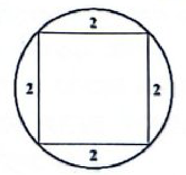
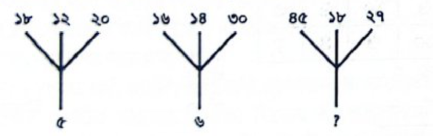
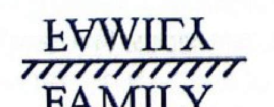
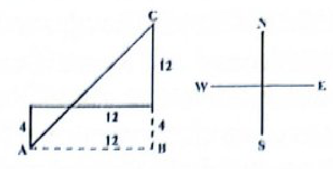
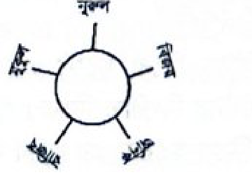
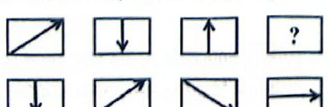
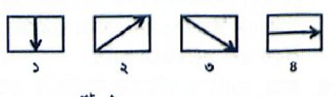
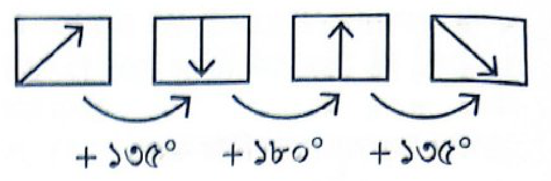

পেশাগত দক্ষতা, সংবিধানের মৌলিক অধিকার ও প্রজাতন্ত্রের ভিত্তি, বিশ্বব্যাংকের সুশাসন প্রতিবেদন (১৯৯২), UNCAC কনভেনশন।
সর্বমোট
১ — ২০০
২০০টি
শতভাগ প্রামাণ্য প্রশ্ন ও বিশদ ব্যাখ্যা সহ সংকলিত
✏️
প্রথম অংশ: প্রামাণ্য ইন্টারেক্টিভ রিভিশন নোট ও সূত্রাবলি (Authentic Sketchnotes)
📌 প্রাচীন ও মধ্যযুগীয় বাংলা সাহিত্য সংক্ষেপ
• চর্যাপদের ১ম পদ:কাআ তরুবর পঞ্চ বি ডাল... লুই ভণই গুরু পুচ্ছিঅ জান — কবি লুইপা। 'ভণই' অর্থ বলে/উক্তি করে।
• শ্রীকৃষ্ণকীর্তন কাব্যের খণ্ড: মোট ১৩টি খণ্ড (জন্ম, তাম্বুল, দান, নৌকা, ভার, ছত্র, বৃন্দাবন, কালীয়দমন, বস্ত্রহরণ, হার, বাণ, বংশী ও রাধাবিরহ)। 'প্রণয় খণ্ড' নামে কোনো খণ্ড নেই।
• আলাওলের আত্মকথা: মধ্যযুগের কবি আলাওল কেবল 'হপ্তপয়কর' কাব্যে সংক্ষেপে নিজের বন্দিদশা ও ব্যক্তিগত জীবনের দুঃখকষ্টের কথা তুলে ধরেন।
• মঙ্গলকাব্যে ঐতিহাসিক চরিত্র: ভারতচন্দ্র রায়গুণাকরের অন্নদামঙ্গল কাব্যে সম্রাট আকবরের সেনাপতি মানসিংহ ও জমিদার ভবানন্দ মজুমদার ঐতিহাসিক চরিত্র হিসেবে চিত্রিত।
📐 স্বরধ্বনি ও ধ্বনিতত্ত্বের প্রামাণ্য ছক
ঠোঁটের উন্মুক্ততার ভিত্তিতে স্বরধ্বনির প্রমিত বিভাজন:
বিভাগ
বৈশিষ্ট্য
উদাহরণ ধ্বনি
সংবৃত
ঠোঁট সবচেয়ে কম খোলে
[ই], [উ]
অর্ধ-সংবৃত
ঠোঁট সামান্য খোলে
[এ], [ও]
অর্ধ-বিবৃত
ঠোঁট বেশি প্রসারিত
[অ্যা], [অ]
বিবৃত
ঠোঁট সবচেয়ে বেশি খোলে
[আ]
⚡ বানান সংস্কার ১৯৩৬: কলকাতা বিশ্ববিদ্যালয়ের বানান সংস্কার কমিটির মূল লক্ষ্য ছিল বানানে বিকল্প বর্জন এবং কাঠামো সুনির্দিষ্ট করা।
🎭 নাটক ও সাহিত্যের যুগলবন্দি
• 'কবর' বিভ্রান্তি নিরসন:
'কবর' কবিতা: পল্লীকবি জসীমউদ্দীনের ১ম কাব্যগ্রন্থ 'রাখালী' (১৯২৭)-এর বিখ্যাত কবিতা।
'কবর' নাটক: মুনীর চৌধুরী রচিত ভাষা আন্দোলনভিত্তিক প্রথম ঐতিহাসিক নাটক (১৯৬৬)।
• নজরুলের ৫টি বাজেয়াপ্ত গ্রন্থ: ব্রিটিশ সরকার কর্তৃক বাজেয়াপ্ত ৫টি বই হলো— যুগবাণী, ভাঙ্গার গান, বিষের বাঁশি, প্রলয়-শিখা ও চন্দ্রবিন্দু। (তাঁর ১ম কাব্য 'অগ্নি-বীণা' বাজেয়াপ্ত হয়নি)।
• রক্তকরবী (১৯২৪): পুঁজিবাদের যান্ত্রিক শোষণ ও মানবিক সম্পর্কের অবক্ষয়বিরোধী প্রতীকী নাটক; যক্ষপুরী হলো পুঁজিবাদের প্রতীক।
📚 English Literature Milestone Quotes
🎯 Hamlet (Shakespeare): "Neither a borrower nor a lender be, For loan oft loses both itself and friend." (Polonius to Laertes)
🎯 The Canonization (John Donne): "For God's sake hold your tongue, and let me love." (Quoted by Amit in Rabindranath's Shesher Kobita)
• Pastoral Elegies:
Thyrsis (1861) by Matthew Arnold (for Arthur Hugh Clough)
Lycidas (1637) by John Milton (for Edward King)
Adonais (1821) by P. B. Shelley (for John Keats)
• Locksley Hall (Tennyson):"Knowledge comes, but wisdom lingers."
⚡ English Grammar Rapid Rules
One of + Plural Noun + Singular Verb
Example: One of my sisters is a nurse.
• Bare Infinitive in Passive: Active voice-এ hear, see, make-এর পর 'to' উহ্য থাকে কিন্তু Passive-এ অবশ্যই পূর্ণ infinitive বসে:
Active: I heard her sing.
Passive: She was heard to sing by me.
• ৭(খ) অনুচ্ছেদ: সংবিধানের প্রস্তাবনা, ১ম, ২য় ও ৩য় ভাগের সকল অনুচ্ছেদ এবং ১৫০ অনুচ্ছেদসহ মৌলিক কাঠামো পরিবর্তন বা সংশোধন অযোগ্য।
• ১৮ অনুচ্ছেদ: জনস্বাস্থ্য ও নৈতিকতা সংরক্ষণ এবং মাদকদ্রব্য নিষিদ্ধকরণ রাষ্ট্রের প্রাথমিক দায়িত্ব।
• ২৯ অনুচ্ছেদ: প্রজাতন্ত্রের সরকারি নিয়োগ লাভে সকল নাগরিকের সমান সুযোগ একটি অলঙ্ঘনীয় মৌলিক অধিকার।
• জরুরি অবস্থা টাইমলাইন (মোট ৫ বার):
ক্রম
তারিখ
রাষ্ট্রপ্রধান
১ম
২৮ ডিসেম্বর ১৯৭৪
বঙ্গবন্ধু শেখ মুজিবুর রহমান
২য়
৩০ মে ১৯৮১
আবদুস সাত্তার
৩য়
২৭ নভেম্বর ১৯৮৭
হুসেইন মুহম্মদ এরশাদ
৪র্থ
২৭ নভেম্বর ১৯৯০
হুসেইন মুহম্মদ এরশাদ
৫ম
১১ জানুয়ারি ২০০৭
ড. ইয়াজউদ্দিন আহম্মেদ
🔬 বিজ্ঞান ও মহাকাশ প্রযুক্তি সারসংক্ষেপ
• হিগস বোসন কণা: কণা পদার্থবিজ্ঞানের স্ট্যান্ডার্ড মডেলে ভর সৃষ্টির জন্য দায়ী কণা। ঢাকা বিশ্ববিদ্যালয়ের অধ্যাপক বাঙালি বিজ্ঞানী সত্যেন্দ্রনাথ বসু-র 'বোস-আইনস্টাইন পরিসংখ্যান'-এর নামানুসারে এর নাম 'বোসন' রাখা হয়।
• জেমস ওয়েব স্পেস টেলিস্কোপ (JWST): ২০২১ সালের ২৫ ডিসেম্বর উৎক্ষেপিত বিশ্বখ্যাত হাবল টেলিস্কোপের উত্তরসূরি ইনফ্রারেড স্পেস টেলিস্কোপ।
• রেয়ার-আর্থ মিনারেলস (১৭টি): ল্যান্থানাইড সিরিজের ১৫টি ধাতু + স্ক্যান্ডিয়াম ও ইট্রিয়াম। এদের প্রধান গুণ অসাধারণ শক্তিশালী চৌম্বক ধর্ম।
• সোডিয়াম (Na): তীব্র সক্রিয় ক্ষার ধাতু; পানিতে ফেললে তীব্র তাপোৎপাদী বিক্রিয়ায় হাইড্রোজেন গ্যাস নির্গত হয়ে আগুন ধরে যায়। এটি কেরোসিনের নিচে রাখা হয়।
দ্বিতীয় অংশ: বিগত বছরের প্রামাণ্য প্রশ্নব্যাংক ও ইন্টারঅ্যাক্টিভ কুইজ
🏆 আপনার লাইভ স্কোর:০/ ২০০
১
বাংলা ভাষা ও সাহিত্য · চর্যাপদ ও প্রাচীন যুগ
‘লুই ভণই গুরু পুচ্ছিঅ জান।’ এখানে 'ভণই' শব্দের অর্থ কী?
সঠিক উত্তর: ক
লুইপা রচিত চর্যাপদের প্রথম পদের লাইন এটি। পদটি হলো—
কাআ তরুবর পঞ্চ বি ডাল।
চঞ্চল চীএ পইঠো কাল।।
দিঢ় করিঅ মহাসুহ পরিমাণ।
লুই ভণই গুরু পুচ্ছিঅ জান।।
‘লুই ভণই গুরু পুচ্ছিঅ জান।’— এর বাংলা অর্থ: লুই বলেছেন, গুরুকে জিজ্ঞেস করে জানো। 'ভণই' অর্থ ‘বলে’।
২
বাংলা ভাষা ও সাহিত্য · মধ্যযুগীয় বৈষ্ণব সাহিত্য
'শ্রীকৃষ্ণকীর্তন' কাব্যের অংশ নয় কোনটি?
সঠিক উত্তর: ঘ
'শ্রীকৃষ্ণকীর্তন' কাব্যের ১৩টি খন্ডের মধ্যে নৌকা খন্ড, হার খন্ড, এবং রাধা বিরহ রয়েছে, কিন্তু 'প্রণয় খন্ড' নামে কোনো খন্ড নেই। 'শ্রীকৃষ্ণকীর্তন' কাব্যের ১৩টি খন্ড হলো: জন্মখন্ড, তাম্বুলখন্ড, দানখন্ড, নৌকাখন্ড, ভারখন্ড, ছত্রখন্ড, বৃন্দাবনখন্ড, কালীয়দমনখন্ড, বস্ত্রহরণখন্ড, হারখন্ড, বাণখন্ড, বংশীখন্ড, রাধাবিরহ।
৩
বাংলা ভাষা ও সাহিত্য · ধ্বনি ও বর্ণ প্রকরণ
বিবৃত স্বরধ্বনি বলতে বোঝায়-
সঠিক উত্তর: ক
স্বরধ্বনি উচ্চারণের সময়ে ঠোঁট কতটুকু খোলা বা বন্ধ থাকে অর্থাৎ কী পরিমাণ উন্মুক্ত হয়, তার ভিত্তিতে স্বরধ্বনি চার ভাগে বিভক্ত। যথা:
• সংবৃত: [ই], [উ];
• অর্ধ সংবৃত: [এ], [ও];
• অর্ধ বিবৃত: [অ্যা], [অ];
• বিবৃত: [আ]।
সংবৃত স্বরধ্বনি উচ্চারণের সময় ঠোঁট কম খোলে; বিবৃত স্বরধ্বনি উচ্চারণের সময় ঠোঁট বেশি খোলে।
৪
বাংলা ভাষা ও সাহিত্য · বাংলা ব্যাকরণ ও অভিধানের ইতিহাস
মনোয়েল দ্যা আসসুম্পসাঁও অভিধান প্রকাশের আগে কত বছর ধরে শব্দ সংগ্রহ করেন?
সঠিক উত্তর: গ
প্রথম বাংলা ব্যাকরণ প্রকাশিত হয় ১৭৪৩ সালে পর্তুগিজ ভাষায়। এর লেখক ছিলেন মানোয়েল দ্যা আসসুম্পসাঁও। তিনি অভিধান প্রকাশের আগে ৯-১০ বছর ধরে শব্দ সংগ্রহ করেন।
৫
বাংলা ভাষা ও সাহিত্য · বাংলা উপন্যাস ও সাময়িকপত্র
'আলালের ঘরের দুলাল' প্রথমে কোন পত্রিকায় ধারাবাহিকভাবে প্রকাশিত হয়?
সঠিক উত্তর: গ
প্যারীচাঁদ মিত্রের প্রথম গ্রন্থ 'আলালের ঘরের দুলাল'। এটি বাংলা সাহিত্যের প্রথম সামাজিক উপন্যাস। গ্রন্থটি ১৮৫৪ খ্রিস্টাব্দ থেকে মাসিক পত্রিকায় ধারাবাহিকভাবে প্রকাশিত হয়ে ১৮৫৮ খ্রিস্টাব্দে গ্রন্থাকারে প্রকাশিত হয়। উপন্যাসটিতে মধ্যবিত্ত বাঙালির সামাজিক ছবি, কুসংস্কার, আভিজাত্যের ভণ্ডামি ও সামাজিক পরিবর্তনের আকাঙ্ক্ষা ফুটে উঠেছে।
৬
বাংলা ভাষা ও সাহিত্য · আধুনিক যুগের কবিতা
'সকলের তরে সকলে আমরা/প্রত্যেকে আমরা পরের তরে।' কোন কবিতার অংশ?
সঠিক উত্তর: ঘ
'সুখ' কবিতা ১৮৮০ সালে লেখা বিখ্যাত একটি কবিতা কামিনী রায়ের। এই কবিতা 'আলো ও ছায়া' কাব্যগ্রন্থের কবিতা। আলো ও ছায়া কাব্যগ্রন্থ প্রকাশিত হয় ১৮৮৯ সালে। পরবর্তীতে ১৮৮৯ সালে সুখ কবিতার শেষের কয়েকটি লাইন নিয়ে 'পরার্থে' নামে একটি কবিতা তার কবিতাবলী কাব্যগ্রন্থে যুক্ত করা হয়। প্রকৃতপক্ষে পরার্থে স্বতন্ত্র কোন কবিতা নয় এটি সুখ কবিতার ই অংশ।
৭
বাংলা ভাষা ও সাহিত্য · কাজী নজরুল ইসলাম
কাজী নজরুল ইসলামের কোন গ্রন্থটি বাজেয়াপ্ত হয়নি?
সঠিক উত্তর: ক
কাজী নজরুল ইসলামের ৫টি গ্রন্থ ব্রিটিশ সরকার কর্তৃক বাজেয়াপ্ত হয়: যুগবাণী, ভাঙ্গার গান, বিষের বাঁশি, প্রলয়-শিখা এবং চন্দ্রবিন্দু। কিন্তু 'অগ্নিবীণা' বাজেয়াপ্ত হয়নি। 'অগ্নি-বীণা' কাজী নজরুল ইসলামের প্রথম কাব্যগ্রন্থ, যা ১৯২২ সালে প্রকাশিত হয়। যদিও তাঁর অনেক রাজনৈতিক কবিতা ও গদ্যগ্রন্থ ব্রিটিশ সরকার কর্তৃক বাজেয়াপ্ত হয়েছিল, 'অগ্নি-বীণা' বাজেয়াপ্ত হয়নি।
৮
বাংলা ভাষা ও সাহিত্য · জসীমউদ্দীন ও পঞ্চকবি
জসীম উদ্দীনের 'কবর' কবিতাটি কোন কাব্যের অন্তর্গত?
সঠিক উত্তর: খ
কবর কবিতা: জসীমউদ্দীনের প্রথম কাব্যগ্রন্থ 'রাখালী' (১৯২৭) এর ১৮টি কবিতার মধ্যে অন্যতম কবিতা 'কবর'।
কবর নাটক: ১৯৫২ সালের ভাষা আন্দোলনের পটভূমিতে রচিত প্রথম নাটক 'কবর' (১৯৬৬)। 'কবর' নাটকের রচয়িতা মুনীর চৌধুরী।
৯
বাংলা ভাষা ও সাহিত্য · বাংলা ভাষার উদ্ভব ও প্রাকৃত
গৌড়ী প্রাকৃত বলতে বোঝায়-
সঠিক উত্তর: ক
ড. মুহম্মদ শহীদুল্লাহর মতে গৌড়ীয় প্রাকৃত হতে বাংলা ভাষার উৎপত্তি। গৌড়ীয় প্রাকৃত বলতে গৌড় অঞ্চলের মানুষের মুখের ভাষাকে বোঝায়।
১০
বাংলা ভাষা ও সাহিত্য · পারিভাষিক শব্দ
'Glossary' শব্দের বাংলা পরিভাষা -
সঠিক উত্তর: গ
'Glossary' শব্দের সঠিক বাংলা পরিভাষা হলো 'শব্দার্থপঞ্জি' বা 'শব্দকোষ'।
১১
বাংলা ভাষা ও সাহিত্য · শব্দ গঠন ও শুদ্ধিকরণ
'ঐক্যমত' শব্দটি কোন বিবেচনায় অশুদ্ধ নয়?
সঠিক উত্তর: ক
'ঐক্যমত' শব্দটি 'মতের ঐক্য' এভাবে সমাস সাধিত ধরলে শুদ্ধ হয় (এটি কর্মধারয় সমাস)। একমত + য প্রত্যয়টি অশুদ্ধ। এর শুদ্ধ প্রত্যয় ঐক্য মত। ঐক্যমত শব্দটিতে কোনো উপসর্গ নেই। ঐক্যমত শব্দটি পারিভাষিক শব্দ নয়।
১২
বাংলা ভাষা ও সাহিত্য · বাংলা বানান সংস্কারের ইতিহাস
১৯৩৬ সালে কলিকাতা বিশ্ববিদ্যালয়ের বানান সংস্কারের মূল উদ্দেশ্য ছিল-
সঠিক উত্তর: ঘ
১৯৩৬ সালে কলিকাতা বিশ্ববিদ্যালয়ে বানান সংস্কারে একটি কমিটি গঠন করা হয় রবীন্দ্রনাথ ঠাকুরের অনুরোধে। এই বানান সংস্কার কমিটির পূর্ব প্রণীত বানান সংস্কারের উদ্দেশ্য ছিল ৩টি: ১) বানান যথাসম্ভব সরল ও উচ্চারণসূচক করা। ২) নতুন ও বিদেশি শব্দের ক্ষেত্রে বানান কাঠামো সুনির্দিষ্ট করা। ৩) একই শব্দের একাধিক বানান ব্যবহারে সংকট তৈরি হয় এজন্য তার বিকল্প বর্জন করে প্রত্যেক শব্দের বানান সুনির্দিষ্ট করা। এই রিপোর্টটি ১৯৩৭ সালে ৩য় সংস্করণে প্রকাশ করা হয়। তাদের উদ্দেশ্য ছিল বানানকে সংস্কার করে একটা সুনির্দিষ্ট রূপ দান করা। সুতরাং, প্রশ্নে প্রদত্ত অপশনগুলোর মধ্যে বানানে বিকল্প বর্জন করাই মূল উদ্দেশ্য ছিল। [তথ্যসূত্র: ১৯৩৬ সালের বানান সংস্কার মূল প্রতিবেদন]
১৩
বাংলা ভাষা ও সাহিত্য · অভিধান ক্রম ও বর্ণ প্রকরণ
অভিধানে ৎ, ং, ঃ, ঁ এই বর্ণগুলোর অবস্থান কোথায়?
সঠিক উত্তর: খ
ং, ঃ, ঁ এই তিনটি বর্ণ স্বাধীনভাবে স্বতন্ত্র বর্ণ হিসেবে ভাষায় ব্যবহৃত হয় না। এ বর্ণে দ্যোতিত ধ্বনি অন্য ধ্বনির সঙ্গে মিলিত হয়ে একত্রে উচ্চারিত হয়। এই বর্ণগুলোকে বলা হয় পরাশ্রয়ী বর্ণ। এই বর্ণগুলো স্বরবর্ণের শেষে বসে।
১৪
বাংলা ভাষা ও সাহিত্য · ধ্বনি উচ্চারণ ও উপভাষা
পূর্ববঙ্গীয় উচ্চারণে 'স্মরণ' শব্দের ক্ষেত্রে কোনটি ঘটে?
সঠিক উত্তর: ঘ
পূর্ববঙ্গীয় উচ্চারণে শব্দের আদিতে ব্যঞ্জনযুক্ত ম-ফলা থাকলে সে 'ম' উচ্চারিত হয় না, ম-ফলা যুক্ত ব্যঞ্জনের উচ্চারণ অনুনাসিক [অঁ] হয়। যেমন- স্মরণ [শঁরোন্]। পূর্ববঙ্গীয় উচ্চারণে পদের আদ্য ব্যঞ্জনবর্ণে ম-ফলা যুক্ত হলে শুরুতে নাসিক্য উচ্চারণ হয় না।
১৫
বাংলা ভাষা ও সাহিত্য · বাগধারা ও প্রবাদ
'গড্ডলিকা প্রবাহ' বাগধারার 'গড্ডল' শব্দের অর্থ কী?
সঠিক উত্তর: গ
'গড্ডলিকা প্রবাহ' বাগধারায় 'গড্ডল' শব্দের অর্থ হলো 'ভেড়া'। এই বাগধারাটি অন্ধ অনুকরণ বা নির্বিচারে অন্যের অনুসরণ করাকে বোঝায়।
চণ্ডীদাস ছিলেন বৈষ্ণব পদাবলীর অন্যতম প্রধান কবি। তাঁর পদাবলীতে রাধা-কৃষ্ণ প্রেমকাহিনী মানবীয় প্রেমের আবেগে মিশে গিয়ে চিরন্তন রূপ পেয়েছে। উক্ত পংক্তিতেও প্রেমের গভীরতা ও স্বতঃস্ফূর্ত আত্মিক বন্ধনের প্রকাশ ঘটেছে।
১৭
বাংলা ভাষা ও সাহিত্য · ফোর্ট উইলিয়াম কলেজ ও বাংলা গদ্য
ফোর্ট উইলিয়াম কলেজ পর্বে রচিত বাংলা বইগুলো-
সঠিক উত্তর: ঘ
১৮০০ খ্রিস্টাব্দে গভর্নর জেনারেল লর্ড ওয়েলেসলি কলকাতায় ফোর্ট উইলিয়াম কলেজ প্রতিষ্ঠা করেন। এর উদ্দেশ্য ছিল ব্রিটিশ কর্মকর্তাদের স্থানীয় ভাষা ও সংস্কৃতির সাথে পরিচিত করানো। কলেজে নিযুক্ত বাংলা পণ্ডিতেরা (রামরাম বসু, মুন্সি কালীপ্রসন্ন সিংহ, লালু লাল প্রমুখ) অনেক মৌলিক বাংলা গ্রন্থ রচনা করেন। এগুলো অনুবাদ নয়, বরং শিক্ষার্থীদের ভাষা শেখার সুবিধার্থে গদ্য আকারে মৌলিক কাহিনি ও গল্প লেখা হয়েছিল।
১৮
বাংলা ভাষা ও সাহিত্য · সাহিত্যের রূপ ও রীতি
সাহিত্যের রূপ ও রীতির বিচারে কোন গ্রন্থটি ব্যতিক্রম?
সঠিক উত্তর: ক
গ্রন্থসমূহের ধরন ও রচয়িতা:
• বাংলার কাব্য: সমালোচনামূলক গ্রন্থ (হুমায়ুন কবির)
• দিবারাত্রির কাব্য: উপন্যাস (মানিক বন্দ্যোপাধ্যায়)
• শেষের কবিতা: উপন্যাস (রবীন্দ্রনাথ ঠাকুর)
• নদী ও নারী: উপন্যাস (হুমায়ুন কবির)
সুতরাং 'বাংলা কাব্য' উপন্যাসের আওতাভুক্ত নয়, এটি একটি সমালোচনামূলক প্রবন্ধ গ্রন্থ।
১৯
বাংলা ভাষা ও সাহিত্য · শব্দের অপপ্রয়োগ ও শুদ্ধি
'বিরাট গরু-ছাগলের হাট' ব্যানারে লেখা এই শিরোনামকে অপপ্রয়োগ বলা যায় না কেন?
সঠিক উত্তর: ক
'বিরাট গরু-ছাগলের হাট' কথাটিকে প্রথম দেখলে মনে হয় যেন গরু-ছাগলই বিরাট। কিন্তু আসলে এখানে 'বিরাট' বিশেষণটি 'হাট'-কে বিশেষিত করছে। অর্থাৎ বাক্যের প্রকৃত অর্থ: গরু-ছাগলের বিরাট হাট। তাই একে অপপ্রয়োগ বলা যায় না, বরং এটি শুদ্ধ ব্যবহার হিসেবে গ্রহণযোগ্য।
২০
বাংলা ভাষা ও সাহিত্য · বিপরীতার্থক শব্দ
'অজর' শব্দের বিপরীত কোনটি?
সঠিক উত্তর: খ
'অজর' শব্দটির “অ” = না (নিষেধ); “জর” = জরা বা বার্ধক্য। অতএব, “অজর” অর্থ হয় “যার জরা বা বার্ধক্য নেই”। এর বিপরীত শব্দ হলো 'বার্ধক্য'।
অন্যান্য বিপরীত শব্দ:
• অমলিন — মলিন/কলুষিত
• অমর — নশ্বর
• ব্যাধিগ্রস্ত — সুস্থ/স্বাভাবিক।
২১
বাংলা ভাষা ও সাহিত্য · বাংলা বানান রীতি ও ধ্বনিবিজ্ঞান
'ব্যাং' শব্দটি ং দিয়ে লিখতে হবে, কারণ-
সঠিক উত্তর: ক
ঙ, ং, ঞ এ তিনটি বর্ণে দ্যোতিত ধ্বনি কখনো শব্দের প্রথমে আসে না, শব্দের মধ্যে কিংবা শেষে আসে। ঙ-এর হসন্ত বা স্বরহীন উচ্চারণ নির্দেশ করতেই বাংলায় ং (অনুস্বার) ব্যবহৃত হয়। তাই 'ব্যাং' শব্দটি ং দিয়ে লেখা হয়।
২২
বাংলা ভাষা ও সাহিত্য · বাক্যের ত্রুটি ও যোগ্যতা
'সে কৌতুক করার কৌতূহল সংবরণ করতে পারল না।' এই বাক্য কী কারণে ত্রুটিপূর্ণ?
সঠিক উত্তর: গ
এখানে কৌতূহল না বলে আগ্রহ বা ইচ্ছা হলে বাক্যটি সঠিক হতো। এখানে কৌতুকের পর কৌতূহল বসলে অহেতুক জটিলতার সৃষ্টি হয় বলে বাক্যটি অর্থানুযায়ী শব্দের যথাযথ প্রয়োগ না ঘটায় যোগ্যতা হারায়।
২৩
বাংলা ভাষা ও সাহিত্য · সমার্থক ও প্রতিশব্দ
'নিত্য তোমার যে ফুল ফোটে ফুলবনে' এখানে 'নিত্য' শব্দের প্রতিশব্দ কোনটি?
সঠিক উত্তর: ঘ
'নিত্য তোমার যে ফুল ফোটে ফুলবনে' এটি একটি ঈশ্বরচেতন গান। এটি দ্বারা চিরন্তন এবং অহরহ দুটো অর্থই নির্দেশ করে। তবে নিত্য শব্দটি এখানে 'অহরহ' অর্থেই বেশি ব্যবহৃত হয়।
২৪
বাংলা ভাষা ও সাহিত্য · বাক্যতত্ত্ব ও পদক্রম
বাক্যের মধ্যে শব্দ অবস্থান করে কীভাবে?
সঠিক উত্তর: ক
বাক্যের মধ্যে কর্তা এবং ক্রিয়ার পদবিন্যাস অনুযায়ী শব্দ অবস্থান করে কারণ কর্তা ও ক্রিয়ার অবস্থান অনুযায়ী শব্দ না হলে বাক্যটি যোগ্যতা ও আসত্তি হারায়।
২৫
বাংলা ভাষা ও সাহিত্য · বাংলা অভিধান ও একাডেমি
বাংলা একাডেমির 'আধুনিক বাংলা অভিধান'র সম্পাদক কে?
সঠিক উত্তর: ঘ
বাংলা একাডেমির 'আধুনিক বাংলা অভিধান' এর সম্পাদক জামিল চৌধুরী। এছাড়াও:
• আবু ইসহাক: বাংলা একাডেমির সমকালীন বাংলা ভাষার অভিধানের সম্পাদক।
• আনিসুজ্জামান: আমার অভিধানের সম্পাদক।
• মনসুর মুসা: বাংলায় প্রচলিত ইংরেজি শব্দের অভিধানের সম্পাদক।
২৬
বাংলা ভাষা ও সাহিত্য · মধ্যযুগীয় মঙ্গলকাব্য
কোন মঙ্গলকাব্যে ঐতিহাসিক চরিত্র আছে?
সঠিক উত্তর: গ
অন্নদামঙ্গল কাব্যের রচয়িতা ভারতচন্দ্র রায়গুণাকর। এ কাব্য মোট তিনটি খণ্ডে বিভক্ত - শিবনারায়ণ খণ্ড, কালিকামঙ্গল খণ্ড এবং মানসিংহ-ভবানন্দ খণ্ড। এই কাব্যে মানসিংহ ও ভবানন্দ প্রধান চরিত্র হিসেবে উঠে এসেছে এবং উভয়ের সঙ্গেই ঐতিহাসিক প্রেক্ষাপট জড়িত।
২৭
বাংলা ভাষা ও সাহিত্য · মধ্যযুগীয় অনুবাদ ও রোমান্টিক প্রণয়োপাখ্যান
কোন কাব্যে আলাওল ব্যক্তিগত জীবনের কথা লিখেছেন?
সঠিক উত্তর: খ
আলাওল রচিত প্রধান কাব্যগুলো হলো পদ্মাবতী, সয়ফুলমুলুক বদিউজ্জামান, হপ্তপয়কর, সিকান্দরনামা, তোহফা ইত্যাদি। গবেষকরা উল্লেখ করেছেন, আলাওল তাঁর ব্যক্তিগত জীবনের কথা একমাত্র 'হপ্তপয়কর' কাব্যে সংক্ষেপে লিখেছেন। এখানে তিনি বন্দি হওয়া, আরাকান দরবারে আগমন এবং জীবনের দুঃখকষ্টের কথা উল্লেখ করেন।
২৮
বাংলা ভাষা ও সাহিত্য · ভ্রমণসাহিত্য ও মুসলিম রেনেসাঁ
'তুরস্ক-ভ্রমণ' কার লেখা?
সঠিক উত্তর: ক
উনিশ শতকের মুসলিম পুর্নজাগরণের কবি ইসমাইল হোসেন সিরাজী। তিনি তুরস্কের সরকার কর্তৃক গাজী উপাধি লাভ করেন। তিনি বঙ্কিমচন্দ্রের দুর্গেশনন্দিনী উপন্যাসের প্রতিক্রিয়ায় রায়নন্দিনী (১৯১৮) রচনা করেন। তাঁর বিখ্যাত ভ্রমণকাহিনি তুরস্ক ভ্রমণ (১৯১০)।
২৯
বাংলা ভাষা ও সাহিত্য · সৈয়দ ওয়ালীউল্লাহ ও আধুনিক উপন্যাস
সৈয়দ ওয়ালীউল্লাহর 'চাঁদের অমাবস্যা' উপন্যাসে কোন জীবনদর্শনের রূপায়ণ ঘটেছে?
সঠিক উত্তর: গ
সৈয়দ ওয়ালীউল্লাহর 'চাঁদের অমাবস্যা' উপন্যাসে অস্তিত্ববাদ জীবনদর্শনের রূপায়ণ ঘটেছে। এই উপন্যাসের প্রধান চরিত্র যুবক শিক্ষক আরেফ আলী একটি খুনের ঘটনা দেখে ফেলেন। এই ঘটনার পর তার মনোজগতে সত্য প্রকাশ বনাম আত্মরক্ষার এক তীব্র অস্তিত্ব সংকট তৈরি হয়।
৩০
বাংলা ভাষা ও সাহিত্য · ভাষা আন্দোলনভিত্তিক সাহিত্য
এই পংক্তিগুলো কবি আল মাহমুদ-এর বিখ্যাত কাব্যগ্রন্থ 'লোক লোকান্তর'-এর অন্তর্ভুক্ত। কবিতাটির নাম হলো 'একুশের কবিতা'। এটি ভাষা আন্দোলন ও স্বাধীনতা সংগ্রামের চেতনাকে তুলে ধরে।
৩১
বাংলা ভাষা ও সাহিত্য · শিশুতোষ সাহিত্য ও কবি ফররুখ আহমদ
'হরফের ছড়া' কার লেখা বর্ণশিক্ষার বই?
সঠিক উত্তর: গ
'হরফের ছড়া' বর্ণশিক্ষার বইটি লিখেছেন প্রখ্যাত কবি ফররুখ আহমদ। বইটি ১৯৬৯ সালে তৎকালীন একটি জাতীয় প্রকাশনা থেকে প্রথম প্রকাশিত হয়েছিল। এটি শিশুদের বাংলা বর্ণমালা শেখার জন্য ছন্দে লেখা জনপ্রিয় একটি বই।
৩২
বাংলা ভাষা ও সাহিত্য · রবীন্দ্রনাথ ঠাকুর ও নাট্যসাহিত্য
'রক্তকরবী' নাটকের অন্তর্গত বিষয় কী?
সঠিক উত্তর: ঘ
'রক্তকরবী' রবীন্দ্রনাথ ঠাকুরের একটি বিখ্যাত প্রতীকী নাটক। এর মূল বিষয়বস্তু হলো: পুঁজিবাদের নেতিবাচক প্রভাব দেখানো। এই নাটকে 'যক্ষপুরী' হলো পুঁজিবাদের প্রতীকী রূপ। নাটকটি ১৯২৩ সালে রচিত ও ১৯২৪ সালে প্রকাশিত হয়। প্রথম নাম ছিল যক্ষপুরী।
৩৩
বাংলা ভাষা ও সাহিত্য · মীর মশাররফ হোসেন
মীর মশাররফ হোসেন সম্পর্কে কোন তথ্যটি যথার্থ নয়?
সঠিক উত্তর: ঘ
মীর মশাররফ হোসেনের প্রথম স্ত্রীর নাম ছিল আজিজুন্নেসা। বিবি কুলসুম ছিলেন মীর মোশাররফ হোসেনের দ্বিতীয় স্ত্রী। তিনি বিষাদ-সিন্ধু ৩ খণ্ডে (মহরম পর্ব, উদ্ধার পর্ব, এজিদ-বধ পর্ব) রচনা করেন এবং আত্মজীবনীমূলক গ্রন্থ 'আমার জীবনী' রচনা করেন।
৩৪
বাংলা ভাষা ও সাহিত্য · জীবনানন্দ দাশ
জীবনানন্দ দাশের মৃত্যুর পর কোন কাব্যগ্রন্থটি প্রকাশিত হয়?
সঠিক উত্তর: খ
জীবনানন্দ দাশ ১৯৫৪ সালের ২২শে অক্টোবর ট্রাম দুর্ঘটনায় মৃত্যুবরণ করেন। পরলোকগমনের পর তাঁর দুটি কাব্যগ্রন্থ প্রকাশিত হয়। এগুলো হলো- রূপসী বাংলা (১৯৫৭) এবং বেলা অবেলা কালবেলা (১৯৬১)।
৩৫
বাংলা ভাষা ও সাহিত্য · বঙ্কিমচন্দ্র চট্টোপাধ্যায়
'তুমি অধম তাই বলিয়া আমি উত্তম না হইব কেনো' - কোন উপন্যাসে আছে?
সঠিক উত্তর: ক
'তুমি অধম তাই বলিয়া আমি উত্তম হইব না কেন?' -এই বিখ্যাত উক্তিটি বঙ্কিমচন্দ্র চট্টোপাধ্যায়ের লেখা। এটি মূলত বঙ্কিমচন্দ্রের কপালকুণ্ডলা উপন্যাসের সুপরিচিত সংলাপ হিসেবে খ্যাত হলেও বঙ্কিমচন্দ্রের উপন্যাসের অন্যতম নীতিবাক্য।
৩৬
English Language & Literature · One Word Substitution
A speech made without any previous thought, preparation or practice is called a/an-
সঠিক উত্তর: খ
পূর্বপ্রস্তুতি ছাড়া দেওয়া বক্তব্যকে বলা হয় extempore speech (তাৎক্ষণিক বক্তৃতা)। এটি সাধারণত পরীক্ষায়, বিতর্ক বা কোনো অনুষ্ঠানে হঠাৎ দিতে হয়। Maiden speech হলো কোনো সভায় বা সংসদে প্রথম দেওয়া ভাষণ।
৩৭
English Language & Literature · Number & Pluralization
Which one has the identical singular and plural form?
সঠিক উত্তর: গ
Deer, sheep, swine, cannon, dice, aircraft, pair, dozen, salmon ইত্যাদি শব্দগুলোর singular এবং plural form একই। অন্যদিকে Memorandum-এর plural Memoranda, Stimulus-এর Stimuli, এবং Oasis-এর Oases।
৩৮
English Language & Literature · Parts of Speech: Adverb
Select the sentence in which 'fast' is an adverb:
সঠিক উত্তর: ক
In the sentence 'Don't drive so fast!', the word 'fast' modifies the action verb 'drive' and tells how to drive. Therefore, it functions as an adverb. In option B, 'fast' is an adjective; in option C, it is a verb; and in option D, it is a noun.
৩৯
English Language & Literature · Parts of Speech: Adjective
'It was a cowardly attack on a defenceless man.' Here 'cowardly' is an-
সঠিক উত্তর: খ
Though ending in '-ly', 'cowardly' is an adjective because it describes the noun 'attack'. Cowardly is the adjective form of the noun 'coward'.
৪০
English Language & Literature · Preposition Identification
The river flows past the village. Here 'past' is a/an-
সঠিক উত্তর: ঘ
প্রদত্ত বাক্যে 'past' শব্দটি 'village' (noun) এর আগে বসে 'flows' ক্রিয়ার সাথে দিক ও অবস্থানের সম্পর্ক স্থাপন করেছে। তাই 'past' এখানে Preposition হিসেবে ব্যবহৃত হয়েছে।
৪১
English Language & Literature · Classification of Verbs
"Ihana sleeps only for four hours a night." In this sentence the verb 'sleeps' is-
সঠিক উত্তর: খ
Intransitive Verb এমন verb যা কোনো object গ্রহণ করে না, শুধুমাত্র subject-এর কাজকে প্রকাশ করে। এখানে 'sleeps' কোনো অবজেক্ট গ্রহণ করেনি। তাই এটি Intransitive Verb.
৪২
English Language & Literature · Non-Finite Verbs: Gerund
'He started teaching Hamlet.' Here 'teaching' is a/an-
সঠিক উত্তর: ঘ
verb + ing যখন একই সাথে noun এবং verb-এর ভূমিকা পালন করে, তখন তাকে Gerund বলে। এখানে 'teaching' verb 'started'-এর object হিসেবে বসেছে এবং এর নিজস্ব object 'Hamlet' রয়েছে। সুতরাং এটি Gerund।
৪৩
English Language & Literature · Appropriate Preposition
Fill in the blank with the appropriate preposition: "She was married __ a rich man"
সঠিক উত্তর: খ
'কাউকে বিয়ে করা' বোঝাতে passive voice-এ 'marry' verb-এর পর preposition হিসেবে 'to' বসে। যেমন: She was married to a rich man.
৪৪
English Language & Literature · Gender Classification
Which gender is the word 'sibling'?
সঠিক উত্তর: ঘ
'Sibling' শব্দের অর্থ সহোদর ভাই বা বোন। যা দ্বারা পুরুষ বা স্ত্রী উভয়কেই বোঝানো যায়। তাই এটি Common Gender (উভয়লিঙ্গ)।
৪৫
English Language & Literature · Spelling Test
Find out the correctly spelt word:
সঠিক উত্তর: ক
সঠিক বানানটি হলো Reminiscence (স্মৃতিচারণ বা অতীতের স্মৃতিকথা)। এর অক্ষরবিন্যাস: R-e-m-i-n-i-s-c-e-n-c-e.
৪৬
English Language & Literature · Idioms and Phrases
The idiom 'smell a rat' means to-
সঠিক উত্তর: গ
To 'smell a rat' একটি অত্যন্ত জনপ্রিয় idiom যার অর্থ কোনো অনিয়ম, প্রতারণা বা ষড়যন্ত্র সন্দেহ করা (suspect something wrong / deceitful).
৪৭
English Language & Literature · Synonyms & Antonyms
Select the synonym for 'inclement':
সঠিক উত্তর: গ
'Inclement' অর্থ খারাপ, রুক্ষ বা দুর্যোগপূর্ণ (বিশেষ করে আবহাওয়া সম্পর্কে ব্যবহৃত হয়)। এর synonym হলো 'rough' বা 'severe'। অন্যদিকে affable (ভদ্র), mild (মৃদু), genial (বন্ধুভাবাপন্ন)।
৪৮
English Language & Literature · Clauses and Sentences
Tell me frankly why you did this. The underlined part [why you did this] is a/an-
সঠিক উত্তর: খ
যে Subordinate clause কোনো বাক্যে noun-এর মতো কাজ করে তাকে Noun Clause বলে। এখানে 'why you did this' অংশটি 'Tell' verb-এর indirect object-এর পরিপূরক হিসেবে কাজ করছে। তাই এটি Noun Clause.
৪৯
English Language & Literature · Prefix & Suffix
The prefix 'non' can be added to-
সঠিক উত্তর: গ
'Partisan' (দলকানা বা কোনো বিশেষ দলের অন্ধ সমর্থক)-এর পূর্বে 'non' prefix যোগ হয়ে 'non-partisan' (নিরপেক্ষ বা নির্দলীয়) গঠিত হয়। regular-এর ক্ষেত্রে irregular, obey-এর ক্ষেত্রে disobey ব্যবহৃত হয়।
৫০
English Language & Literature · Voice Change
Identify the correct passive form: 'I heard her sing.'
সঠিক উত্তর: ঘ
Active voice-এ see, hear, make, watch, help প্রভৃতি bare infinitive গ্রহণ করে (অর্থাৎ 'to' উহ্য থাকে)। কিন্তু passive voice রূপান্তরের সময় এদের পরে বাধ্যতামূলকভাবে পূর্ণ infinitive অর্থাৎ 'to + verb' বসে। তাই সঠিক রূপ: She was heard to sing by me.
৫১
English Language & Literature · Subject-Verb Agreement
Which sentence is correct?
সঠিক উত্তর: গ
Rule: One of + Plural Noun + Singular Verb। এখানে 'one' হলো মূল subject যা singular, তাই verb হবে 'is' এবং 'sisters' হবে plural। সঠিক বাক্য: 'One of my sisters is a nurse.'
৫২
English Language & Literature · Articles & Determiners
Select the right determiner: 'She works as __ FBI analyst'
সঠিক উত্তর: খ
শব্দসংক্ষেপ বা Abbreviation-এর প্রথম অক্ষরের উচ্চারণ যদি ভাওয়েল ধ্বনি দিয়ে শুরু হয় (যেমন: F = 'এফ' [ef]), তবে তার পূর্বে indefinite article হিসেবে 'an' বসে। তাই 'an FBI analyst' শুদ্ধ।
৫৩
English Language & Literature · Participles
'We met Medha carrying a bouquet of red roses.' Here 'carrying' is a/an-
সঠিক উত্তর: ঘ
এখানে 'carrying' শব্দটি Medha (noun)-এর অবস্থা বর্ণনা করছে এবং একই সাথে ক্রিয়ার কাজ করছে (verb + adjective)। সুতরাং এটি Present Participle.
৫৪
English Language & Literature · Sentence Transformation
"Five years have passed since his father died". Identify the correct simple form of the sentence:
সঠিক উত্তর: খ
Complex বাক্য 'Five years have passed since his father died' কে Simple করতে অতীত কালের নির্দিষ্ট সময় প্রকাশে 'ago' যোগ করে Past Indefinite করতে হয়: 'His father died five years ago.'
৫৫
English Language & Literature · Antonyms
Choose the antonym of controversy:
সঠিক উত্তর: গ
Controversy অর্থ বিতর্ক বা মতপার্থক্য। contention, bickering, dispute সবই এর সমার্থক। এর বিপরীতার্থক শব্দ হলো unanimity (সর্বসম্মত মতামত বা ঐকমত্য)।
৫৬
English Language & Literature · Metaphysical Poetry: John Donne
'For God's sake hold your tongue, and let me love.' This line is taken from the poem-
সঠিক উত্তর: খ
এই বিখ্যাত উদ্বোধনী লাইনটি মেটাফিজিক্যাল কবি John Donne-এর কালজয়ী কবিতা 'The Canonization' থেকে নেওয়া। রবীন্দ্রনাথ ঠাকুর তাঁর 'শেষের কবিতা' উপন্যাসে অমিত লাবণ্যকে উদ্দেশ্য করে এই লাইনটি উদ্ধৃত করেছিলেন।
৫৭
English Language & Literature · Irish Literary Renaissance
The one-act play 'Riders to the Sea' was written by-
সঠিক উত্তর: গ
'Riders to the Sea' (১৯০৪) আইরিশ নাট্যকার J. M. Synge-এর লেখা একটি বিশ্ববিখ্যাত এক-অঙ্কবিশিষ্ট ট্র্যাজেডি নাটক। তাঁর অন্যান্য কাজের মধ্যে 'The Playboy of the Western World' অন্যতম।
৫৮
English Language & Literature · Shakespearean Plays: Hamlet
"Neither a borrower nor a lender be, For loan oft loses both itself and friend."
সঠিক উত্তর: ঘ
উক্তিটি শেক্সপিয়রের ট্র্যাজেডি নাটক 'Hamlet'-এর Act 1, Scene 3-এ পোলোনিয়াস তাঁর পুত্র লার্তেসকে দেওয়া উপদেশের অংশ।
৫৯
English Language & Literature · Victorian Poetry: Elegies
Who composed the elegiac poem "Thyrsis"?
সঠিক উত্তর: খ
'Thyrsis' একটি বিখ্যাত pastoral elegy যা ভিক্টোরিয়ান কবি Matthew Arnold তাঁর অন্তরঙ্গ বন্ধু ও কবি Arthur Hugh Clough-এর স্মরণে ১৮৬১ সালে রচনা করেন।
৬০
English Language & Literature · Modern Literary Criticism: T. S. Eliot
Who is the writer of the famous essay "Tradition and the Individual Talent"?
সঠিক উত্তর: গ
'Tradition and the Individual Talent' (১৯১৯) টি. এস. এলিয়টের একটি অত্যন্ত প্রভাবশালী সাহিত্য সমালোচনা প্রবন্ধ। এতে তিনি তাঁর বিখ্যাত 'Theory of Impersonality' তুলে ধরেন।
৬১
English Language & Literature · Romantic Poetry: P. B. Shelley
"Our sweetest songs are those that tell of saddest thought." ---This oft-quoted line occurs in Shelley's notable poem-
সঠিক উত্তর: ক
এই অবিস্মরণীয় চরণটি রোমান্টিক কবি পার্সি বিশ শেলি রচিত 'To a Skylark' কবিতার ১৮তম স্তবকের অন্তিম লাইন।
৬২
English Language & Literature · 20th Century Novels
Who authored the futuristic novel 'Brave New World'?
সঠিক উত্তর: গ
'Brave New World' (১৯৩২) হলো ব্রিটিশ লেখক অ্যালডাস লিওনার্ড হাক্সলি রচিত একটি ক্লাসিক ডিস্টোপিয়ান সাইন্স-ফিকশন উপন্যাস।
৬৩
English Language & Literature · American Poetry: Robert Frost
"Good fences make good neighbors" The line was written by-
সঠিক উত্তর: খ
এই প্রবাদতুল্য উক্তিটি চারবারের পুলিৎজারজয়ী প্রখ্যাত আমেরিকান কবি Robert Frost-এর বিখ্যাত কবিতা 'Mending Wall' (১৯১৪) এর অংশ।
৬৪
English Language & Literature · Shakespeare: Julius Caesar
"Cowards die many times before their deaths: The valiant never taste of death but once". In which play of Shakespeare do you find this quote?
সঠিক উত্তর: ক
উক্তিটি শেক্সপিয়রের ঐতিহাসিক নাটক 'Julius Caesar'-এর Act 2, Scene 2-এ স্বয়ং জুলিয়াস সিজার তাঁর স্ত্রী ক্যালপুর্নিয়াকে লক্ষ্য করে বলেন।
৬৫
English Language & Literature · Victorian Poetry: Tennyson
"Knowledge comes, but wisdom lingers." This quote is extracted from Tennyson's poem titled-
সঠিক উত্তর: ঘ
এই বিখ্যাত উক্তিটি ভিক্টোরিয়ান পোয়েট লরিয়েট Alfred Lord Tennyson-এর বিখ্যাত কবিতা 'Locksley Hall' (১৮৪২) থেকে সংকলিত।
৬৬
English Language & Literature · Milton: Dramatic Poetry
The tragedy 'Samson Agonistes' was penned by-
সঠিক উত্তর: গ
'Samson Agonistes' (১৬৭১) হলো অন্ধ মহাকবি John Milton রচিত একটি গ্রিক ধারার ক্লাসিক্যাল ট্র্যাজেডি বা ক্লোজেট ড্রামা।
৬৭
English Language & Literature · Theatre of the Absurd
Who is the playwright of the absurd drama 'Waiting for Godot'?
সঠিক উত্তর: খ
'Waiting for Godot' (১৯৫৩) হলো নোবেলজয়ী আইরিশ নাট্যকার স্যামুয়েল বেকেট (Samuel Beckett) রচিত বিশ্বখ্যাত অ্যাবসার্ড নাটক।
৬৮
English Language & Literature · Romantic Poetry: Lord Byron
"It's strange but true; for truth is always strange, Stranger than fiction." This quote is taken from a poem of-
সঠিক উত্তর: গ
এই বিখ্যাত উক্তিটি লর্ড বায়রনের দীর্ঘ ব্যঙ্গাত্মক মহাকাব্য 'Don Juan' (Canto 14, Stanza 101) থেকে গৃহীত।
৬৯
English Language & Literature · Modern Fiction: Joseph Conrad
Who wrote the novella 'Heart of Darkness'?
সঠিক উত্তর: ক
'Heart of Darkness' (১৮৯৯) পোলিশ-ব্রিটিশ লেখক Joseph Conrad রচিত একটি কালজয়ী উপন্যাসিকা, যাতে আফ্রিকায় ইউরোপীয় ঔপনিবেশিক শোষণের ভয়াবহ রূপ উন্মোচিত হয়।
৭০
English Language & Literature · Modern Essays: George Orwell
Who was the writer of the autobiographical as well as political essay 'Shooting an Elephant'?
সঠিক উত্তর: খ
'Shooting an Elephant' (১৯৩৬) ব্রিটিশ লেখক জর্জ অরওয়েলের আত্মজৈবনিক রাজনৈতিক প্রবন্ধ, যেখানে তিনি বার্মায় পুলিশ কর্মকর্তা থাকাকালীন সাম্রাজ্যবাদের অন্তর্বিরোধ তুলে ধরেন।
৭১
বাংলাদেশ বিষয়াবলি · দ্বি-জাতি তত্ত্ব ও ঐতিহাসিক প্রেক্ষাপট
কোন মুসলিম চিন্তাবিদ প্রথম 'দ্বি-জাতি তত্ত্ব' সম্পর্কে স্পষ্ট ধারণা দেন?
সঠিক উত্তর: খ
প্রথম দ্বি-জাতি তত্ত্বের ধারণা প্রকাশ্যে নিয়ে আসেন স্যার সৈয়দ আহমদ খান (১৮৮০-এর দশকে)। তিনি ভারতীয় উপমহাদেশে হিন্দু ও মুসলমানকে দুটি পৃথক জাতি হিসেবে চিহ্নিত করেন। পরবর্তীতে আল্লামা ইকবাল ১৯৩০ সালে স্বতন্ত্র মুসলিম আবাসভূমির স্বপ্ন দেখেন এবং ১৯৪০ সালে মোহাম্মদ আলী জিন্নাহ লাহোর প্রস্তাবে একে রাজনৈতিক দাবিতে রূপ দেন।
৭২
বাংলাদেশ বিষয়াবলি · ভাষা আন্দোলন ও সাংবিধানিক স্বীকৃতি
কোন বছর পাকিস্তান সরকার বাংলাকে অন্যতম রাষ্ট্রভাষা হিসেবে স্বীকৃতি দেয়?
সঠিক উত্তর: খ
৭ মে ১৯৫৪ সালে পাকিস্তানের গণপরিষদের অধিবেশনে বাংলাকে অন্যতম রাষ্ট্রভাষা হিসেবে প্রাথমিক স্বীকৃতি দেওয়া হয়। এরপর ২৯ ফেব্রুয়ারি ১৯৫৬ সালে পাকিস্তানের প্রথম সংবিধানে বাংলাকে সরকারি ও সাংবিধানিক রাষ্ট্রভাষা হিসেবে অন্তর্ভুক্ত করা হয়।
৭৩
বাংলাদেশ বিষয়াবলি · ভাষা আন্দোলন ও তমদ্দুন মজলিস
'তমদ্দুন মজলিস'-এর নেতা জনাব আবুল কাশেম ঢাকা বিশ্ববিদ্যালয়ের কোন বিষয়ের শিক্ষক ছিলেন?
সঠিক উত্তর: ঘ
১৯৪৭ সালের ২ সেপ্টেম্বর অধ্যাপক আবুল কাশেম কর্তৃক গঠিত হয় 'তমদ্দুন মজলিস'। আবুল কাশেম ঢাকা বিশ্ববিদ্যালয়ের পদার্থবিজ্ঞান বিভাগের শিক্ষক ছিলেন। ১৫ সেপ্টেম্বর ১৯৪৭ সালে তমদ্দুন মজলিস 'পাকিস্তানের রাষ্ট্রভাষা বাংলা না উর্দু?' পুস্তিকা প্রকাশ করে।
৭৪
বাংলাদেশ বিষয়াবলি · মুক্তিযুদ্ধ ও স্বাধীন বাংলা বেতার কেন্দ্র
স্বাধীন বাংলা বেতার কেন্দ্রের জনপ্রিয় অনুষ্ঠান 'জল্লাদের দরবার' এর রচয়িতা কে ছিলেন?
সঠিক উত্তর: ক
স্বাধীন বাংলা বেতার কেন্দ্রের জনপ্রিয় ব্যঙ্গাত্মক ধারাবাহিক অনুষ্ঠান 'জল্লাদের দরবার'-এর রচয়িতা ও পরিচালক ছিলেন কল্যাণ মিত্র। এতে ইয়াহিয়া খানকে 'কেল্লাফতে খান' হিসেবে চিত্রিত করা হতো।
৭৫
বাংলাদেশ বিষয়াবলি · উনসত্তরের গণঅভ্যুত্থান
কোন তারিখে আসাদুজ্জামান আসাদ পুলিশের গুলিতে শহিদ হন?
সঠিক উত্তর: খ
১৯৬৯ সালের ২০ জানুয়ারি ঢাকা বিশ্ববিদ্যালয়ের ছাত্রনেতা আমানুল্লাহ মোহাম্মদ আসাদুজ্জামান (আসাদ) পুলিশের গুলিতে শহিদ হন। এর ফলশ্রুতিতে গণঅভ্যুত্থান তীব্র রূপ নেয় এবং তাঁর স্মরণে আইয়ুব গেটের নাম পরিবর্তন করে 'আসাদ গেট' রাখা হয়।
৭৬
বাংলাদেশ বিষয়াবলি · সংবাদপত্র ও সাময়িকী
'ঢাকা প্রকাশ' সাপ্তাহিক পত্রিকাটির প্রথম সম্পাদক কে?
সঠিক উত্তর: ক
'ঢাকা প্রকাশ' ছিল ঢাকা থেকে প্রকাশিত প্রথম বাংলা সাপ্তাহিক সংবাদপত্র। ১৮৬১ সালের ৭ মার্চ এটি প্রথম প্রকাশিত হয় এবং এর প্রথম সম্পাদক ছিলেন কবি কৃষ্ণচন্দ্র মজুমদার ('সদভাব শতক'-এর রচয়িতা)।
৭৭
বাংলাদেশ বিষয়াবলি · কৃষি ও উদ্যানপালন
সেরিকালচার বলতে বোঝায়-
সঠিক উত্তর: গ
কৃষিভিত্তিক পরিভাষা:
• সেরিকালচার (Sericulture) = রেশম চাষ বা রেশম পোকা পালন
• পিসিকালচার (Pisciculture) = মৎস্য চাষ
• এপিকালচার (Apiculture) = মৌমাছি পালন
• এভিকালচার (Aviculture) = পাখি পালন।
৭৮
বাংলাদেশ বিষয়াবলি · বাংলাদেশের কৃষি সম্পদ
ছায়া প্রেমী (shadow loving) অর্থনৈতিক ফসল কোনটি?
সঠিক উত্তর: ঘ
চা গাছ সরাসরি কড়া রোদ সহ্য করতে পারে না, তাই চা বাগানে ছায়াতরু (shade trees) রোপণ করা হয়। এজন্য চা হলো একটি প্রধান ছায়াপ্রেমী বা শ্যাডো-লাভিং (shade-loving) অর্থনৈতিক ফসল।
৭৯
বাংলাদেশ বিষয়াবলি · কৃষি অর্থনীতি ও খাদ্যশস্য
বিগত ৫০ বছরে বাংলাদেশে কোন ফসলের চাষ তুলনামূলকভাবে সবচেয়ে বেশি বৃদ্ধি পেয়েছে?
সঠিক উত্তর: ক
স্বাধীনতার পর বিগত ৫০ বছরে বাংলাদেশে সবচেয়ে বেশি উৎপাদন বৃদ্ধি পেয়েছে ভুট্টার (প্রায় ১০ গুণ)। এরপর সবজির উৎপাদন বেড়েছে প্রায় ৫ গুণ এবং ধানের উৎপাদন বেড়েছে সাড়ে চার গুণ।
৮০
বাংলাদেশ বিষয়াবলি · জনশুমারি ও জনসংখ্যা সমীক্ষা
২০২২ সালের জনশুমারি অনুযায়ী বাংলাদেশের জনসংখ্যা-
সঠিক উত্তর: ঘ
বাংলাদেশ পরিসংখ্যান ব্যুরোর (BBS) ৬ষ্ঠ জনশুমারি ও গৃহগণনা ২০২২-এর চূড়ান্ত প্রতিবেদন অনুযায়ী বাংলাদেশের জনসংখ্যা ছিল ১৬ কোটি ৯৮ লাখ ২৮ হাজার ৯১১ জন (প্রায় ১৭ কোটি)।
৮১
বাংলাদেশ বিষয়াবলি · গ্রামীণ অর্থনীতি ও ক্ষুদ্রঋণ
ক্ষুদ্রঋণ কার্যক্রম বাংলাদেশের গ্রামীণ অর্থনীতিতে প্রধানত-
সঠিক উত্তর: গ
ক্ষুদ্রঋণ কার্যক্রমের প্রধান সামাজিক ও অর্থনৈতিক প্রভাব হলো গ্রামীণ অর্থনীতি ও পরিবারে নারীর অর্থনৈতিক ক্ষমতায়ন ও সক্রিয় অংশগ্রহণ বৃদ্ধি করা (নারীর অংশগ্রহণ বৃদ্ধি)।
৮২
বাংলাদেশ বিষয়াবলি · প্রবাসী জনশক্তি ও রেমিট্যান্স
বর্তমানে পৃথিবীর কোন দেশে বেশি প্রবাসী বাংলাদেশি কর্মরত রয়েছে?
সঠিক উত্তর: ক
বিএমইটি (BMET)-এর তথ্য অনুযায়ী বর্তমানে বিশ্বে সবচেয়ে বেশি সংখ্যক প্রবাসী বাংলাদেশি কর্মী কর্মরত রয়েছে সৌদি আরবে (মোট অভিবাসীর প্রায় ৪৩%)।
৮৩
বাংলাদেশ বিষয়াবলি · সামষ্টিক অর্থনীতি ও মূল্যস্ফীতি
বাংলাদেশের মতো উন্নয়নশীল দেশগুলোর ক্ষেত্রে মূল্যস্ফীতির সহনশীল মাত্রা হলো-
সঠিক উত্তর: ক
অর্থনীতিবিদ ও কেন্দ্রীয় ব্যাংকের মানদণ্ড অনুযায়ী উন্নয়নশীল দেশগুলোর প্রবৃদ্ধির স্বার্থে বার্ষিক ৬% থেকে ৮% মূল্যস্ফীতিকে স্বাভাবিক ও সহনশীল মাত্রা হিসেবে গণ্য করা হয়।
৮৪
বাংলাদেশ বিষয়াবলি · ব্যাংকিং ও অর্থনীতি
বাংলাদেশ ব্যাংকের রিজার্ভ থেকে চুরি করা অর্থ পাচার করা হয় -
সঠিক উত্তর: ঘ
২০১৬ সালের ৪ ফেব্রুয়ারি বাংলাদেশ ব্যাংকের নিউইয়র্ক ফেডারেল রিজার্ভের অ্যাকাউন্ট থেকে ১০১ মিলিয়ন ডলার চুরির পর অর্থ শ্রীলঙ্কায় (২০ মিলিয়ন) ও ফিলিপাইনে (৮১ মিলিয়ন ডলার) পাঠানো হয়।
৮৫
বাংলাদেশ বিষয়াবলি · অর্থনীতি ও আর্থিক অপরাধ
অর্থ পাচারের কারণ নয় কোনটি?
সঠিক উত্তর: খ
কর ফাঁকি দেওয়া, অবৈধ অর্থ গোপন করা এবং দেশে বিনিয়োগের অনুকূল পরিবেশ না থাকা অর্থ পাচারের মূল কারণ। সুতরাং 'কর ফাঁকি না দেওয়া' অর্থ পাচারের কারণ হতে পারে না।
৮৬
বাংলাদেশ বিষয়াবলি · বৈদেশিক বাণিজ্য ও আমদানি
বাংলাদেশ কোন দুটি দেশ হতে সিংহভাগ সয়াবিন তেল আমদানি করে?
সঠিক উত্তর: ঘ
বাংলাদেশ সিংহভাগ সয়াবিন তেল ও সয়াবিন বীজ আমদানি করে লাতিন আমেরিকার দুই বৃহৎ উৎপাদক দেশ আর্জেন্টিনা ও ব্রাজিল থেকে। মালয়েশিয়া ও ইন্দোনেশিয়া থেকে প্রধানত পাম তেল আমদানি করা হয়।
৮৭
বাংলাদেশ বিষয়াবলি · অর্থনীতি ও বিশ্বব্যাংক মূল্যায়ন
বিশ্বব্যাংকের মতে বাংলাদেশের মূল্যস্ফীতি বাড়ার কারণ নয় কোনটি?
সঠিক উত্তর: ক
জ্বালানি তেলের মূল্যবৃদ্ধি, মুদ্রার অবমূল্যায়ন এবং দুর্বল মুদ্রানীতি মূল্যস্ফীতি বাড়িয়ে তোলে। কিন্তু বৈদেশিক মুদ্রা রিজার্ভ বৃদ্ধি পেলে অর্থনীতি শক্তিশালী হয়, যা মূল্যস্ফীতি বৃদ্ধির কারণ নয়।
৮৮
বাংলাদেশ বিষয়াবলি · শিল্প খাত ও কারখানা
বাংলাদেশের বৃহত্তম সার কারখানার নাম-
সঠিক উত্তর: গ
নরসিংদীর পলাশে অবস্থিত 'ঘোড়াশাল পলাশ ফার্টিলাইজার পাবলিক লিমিটেড' (বা পলাশ ইউরিয়া সার কারখানা) হলো বাংলাদেশের ও দক্ষিণ এশিয়ার অন্যতম সর্ববৃহৎ আধুনিক পরিবেশবান্ধব ইউরিয়া সার কারখানা।
৮৯
বাংলাদেশ বিষয়াবলি · বাংলাদেশ সংবিধান
কোন অনুচ্ছেদ মূলে বাংলাদেশের সংবিধানের মৌলিক বিধানাবলি পরিবর্তনযোগ্য নয়?
সঠিক উত্তর: ঘ
সংবিধানের ৭খ অনুচ্ছেদ অনুযায়ী সংবিধানের প্রস্তাবনা, প্রথম, দ্বিতীয় ও তৃতীয় ভাগের সকল অনুচ্ছেদ এবং একাদশ ভাগের ১৫০ অনুচ্ছেদসহ মৌলিক কাঠামো সংক্রান্ত কোনো বিধান পরিবর্তন বা সংশোধনযোগ্য নয়।
৯০
বাংলাদেশ বিষয়াবলি · বিচার বিভাগ ও সংবিধান
বাংলাদেশের সংবিধানের রক্ষাকর্তা-
সঠিক উত্তর: গ
সংবিধানের অভিভাবক ও রক্ষাকর্তা হলো বাংলাদেশ সুপ্রিম কোর্ট। সংবিধানের সাথে অসামঞ্জস্যপূর্ণ যেকোনো আইন বাতিল করার চূড়ান্ত এখতিয়ার সুপ্রিম কোর্টের রয়েছে।
৯১
বাংলাদেশ বিষয়াবলি · সংবিধানের সংশোধনী
তত্ত্বাবধায়ক সরকার ব্যবস্থা বাতিল সংক্রান্ত সংবিধানের কোন সংশোধনী?
সঠিক উত্তর: ক
২০১১ সালের ৩০ জুন পাস হওয়া সংবিধানের ১৫তম সংশোধনীর মাধ্যমে নির্দলীয় তত্ত্বাবধায়ক সরকার ব্যবস্থা বাতিল করা হয়েছিল। (তত্ত্বাবধায়ক ব্যবস্থা প্রবর্তিত হয়েছিল ত্রয়োদশ সংশোধনীর মাধ্যমে ১৯৯৬ সালে)।
৯২
বাংলাদেশ বিষয়াবলি · সাম্প্রতিক বাংলাদেশ ও জুলাই গণঅভ্যুত্থান
জুলাই শহীদ দিবস কোনটি?
সঠিক উত্তর: ঘ
২০২৪ সালের জুলাই গণঅভ্যুত্থানে রংপুরে আবু সাঈদের শাহাদাত বরণের দিন '১৬ জুলাই'-কে মন্ত্রীপরিষদ বিভাগ কর্তৃক আনুষ্ঠানিকভাবে 'জুলাই শহীদ দিবস' হিসেবে ঘোষণা করা হয়।
৯৩
বাংলাদেশ বিষয়াবলি · অন্তর্বর্তীকালীন সরকার ২০২৪
বর্তমান অন্তর্বর্তী সরকারের প্রধান উপদেষ্টা কবে শপথ গ্রহণ করেন?
সঠিক উত্তর: খ
নোবেল বিজয়ী ড. মুহাম্মদ ইউনূস ২০২৪ সালের ৮ আগস্ট বঙ্গভবনে অন্তর্বর্তীকালীন সরকারের প্রধান উপদেষ্টা হিসেবে শপথ গ্রহণ করেন।
৯৪
বাংলাদেশ বিষয়াবলি · সংবিধান ও রাষ্ট্রব্যবস্থা
বাংলাদেশে মোট কতবার জরুরি অবস্থা জারী করা হয়েছে?
সঠিক উত্তর: ক
বাংলাদেশে এ পর্যন্ত মোট ৫ বার জরুরি অবস্থা জারি করা হয়েছে:
১. ২৮ ডিসেম্বর ১৯৭৪ (বঙ্গবন্ধু শেখ মুজিবুর রহমান)
২. ৩০ মে ১৯৮১ (আবদুস সাত্তার)
৩. ২৭ নভেম্বর ১৯৮৭ (হুসেইন মুহম্মদ এরশাদ)
৪. ২৭ নভেম্বর ১৯৯০ (হুসেইন মুহম্মদ এরশাদ)
৫. ১১ জানুয়ারি ২০০৭ (ড. ইয়াজউদ্দিন আহম্মেদ)।
৯৫
বাংলাদেশ বিষয়াবলি · ঢাকা বিশ্ববিদ্যালয়ের ইতিহাস
ঢাকা বিশ্ববিদ্যালয় বিল কত সালে আইনে পরিণত হয়?
সঠিক উত্তর: খ
ব্রিটিশ ভারতের কেন্দ্রীয় আইনসভায় 'ঢাকা বিশ্ববিদ্যালয় বিল' ১৯২০ সালের ১৮ মার্চ পাস হয়ে আইনে পরিণত হয় এবং ২৩ মার্চ ১৯২০ তা গেজেট আকারে প্রকাশিত হয়। এরপর ১ জুলাই ১৯২১ থেকে বিশ্ববিদ্যালয়ের একাডেমিক কার্যক্রম শুরু হয়।
৯৬
বাংলাদেশ বিষয়াবলি · জাতীয় পুরস্কার ও ভাস্কর্য
একুশে পদক ও স্বাধীনতা পদক দুটোই পেয়েছেন-
সঠিক উত্তর: ঘ
আধুনিক ভাস্কর্যের পথিকৃৎ নভেরা আহমেদ ১৯৯৭ সালে একুশে পদক এবং ২০২৫ সালে মরণোত্তর স্বাধীনতা পদক লাভ করেন।
৯৭
বাংলাদেশ বিষয়াবলি · শাসনব্যবস্থা ও প্রশাসন
বাংলাদেশের প্রশাসনিক কাঠামো-
সঠিক উত্তর: ঘ
সংবিধানের ১ নং অনুচ্ছেদ অনুসারে বাংলাদেশ একটি একক ও স্বাধীন সার্বভৌম প্রজাতন্ত্র (Unitary Republic), যার সকল প্রশাসনিক ও নীতিগত কর্তৃত্ব কেন্দ্রীয় সরকারের হাতে কেন্দ্রীভূত।
৯৮
বাংলাদেশ বিষয়াবলি · খেলাধুলা ও ক্রিকেট
টেস্ট ক্রিকেটে প্রথম বাংলাদেশি হিসেবে ডাবল সেঞ্চুরি করেন-
সঠিক উত্তর: ঘ
মুশফিকুর রহিম ২০১৩ সালে শ্রীলঙ্কার গল আন্তর্জাতিক স্টেডিয়ামে শ্রীলঙ্কার বিপক্ষে ২০০ রানের অনবদ্য ইনিংস খেলে টেস্ট ক্রিকেটে বাংলাদেশের প্রথম ডাবল সেঞ্চুরিয়ান হওয়ার গৌরব অর্জন করেন।
৯৯
বাংলাদেশ বিষয়াবলি · সংবাদপত্রের ইতিহাস
১৯৭৫ সালে একদলীয় শাসন ব্যবস্থায় কোন পত্রিকাটি নিষিদ্ধ ছিল?
সঠিক উত্তর: গ
১৯৭৫ সালের ১৬ জুন বাকশাল ব্যবস্থায় চারটি পত্রিকা ছাড়া অন্য সব সংবাদপত্র বাতিল করা হয়। অনুমোদিত ৪টি পত্রিকা ছিল: দৈনিক ইত্তেফাক, দ্য বাংলাদেশ টাইমস, দৈনিক বাংলা ও বাংলাদেশ অবজারভার। আল মাহমুদ সম্পাদিত 'দৈনিক গণকণ্ঠ' তখন নিষিদ্ধ হয়েছিল।
১০০
বাংলাদেশ বিষয়াবলি · বাংলাদেশের ব্যক্তিত্ব ও সাফল্য
ওয়াসফিয়া নাজরীন বিখ্যাত-
সঠিক উত্তর: গ
ওয়াসফিয়া নাজরীন একজন প্রখ্যাত বাংলাদেশি পর্বতারোহী ও এভারেস্টজয়ী (২৬ মে ২০১২)। তিনি প্রথম বাংলাদেশি হিসেবে বিশ্বের সাতটি মহাদেশের সাতটি সর্বোচ্চ পর্বতশৃঙ্গ (সেভেন সামিট) জয় করেছেন।
১০১
আন্তর্জাতিক বিষয়াবলি · বিশ্ব প্রত্নতত্ত্ব ও সাম্প্রতিক আবিষ্কার
সম্প্রতি পেরুতে খুঁজে পাওয়া ৩৫০০ বছরের পুরোনো শহরের নাম কী?
সঠিক উত্তর: গ
পেরুতে ৩ হাজার ৫০০ বছরের বেশি পুরোনো বাণিজ্যিক কেন্দ্র হিসেবে গড়ে ওঠা প্রাচীন শহরের খোঁজ পেয়েছেন প্রত্নতাত্ত্বিকেরা। এই শহরের নাম 'পেনিকো' (Penico), যা রাজধানী লিমার উত্তরে সুপে উপত্যকার কাছে অবস্থিত।
১০২
আন্তর্জাতিক বিষয়াবলি · জাতিসংঘ ও ফিলিস্তিন সংকট
১৯৪৭ সালে প্যালেস্টাইনকে বিভাজনের পরিকল্পনা জাতিসংঘের কোন প্রস্তাবের মাধ্যমে গৃহীত হয়?
সঠিক উত্তর: খ
১৯৪৭ সালের ২৯ নভেম্বর জাতিসংঘের সাধারণ পরিষদে গৃহীত ১৮১ (II) নং প্রস্তাবের মাধ্যমে ফিলিস্তিন ভূখণ্ডকে আরব ও ইহুদি—এই দুই পৃথক রাষ্ট্রে বিভক্ত করার ঐতিহাসিক পরিকল্পনা পাস হয়।
১০৩
আন্তর্জাতিক বিষয়াবলি · মধ্যপ্রাচ্যের ভূরাজনীতি
নিম্নের কোন দেশটি 'গোলান হাইটস' বিরোধের একটি পক্ষ?
সঠিক উত্তর: গ
গোলান হাইটস (Golan Heights) হলো সিরিয়ার দক্ষিণ-পশ্চিমে অবস্থিত একটি কৌশলগত মালভূমি। ১৯৬৭ সালের ছয় দিনের যুদ্ধে ইসরায়েল সিরিয়ার কাছ থেকে এই ভূখণ্ড দখল করে নেয়, যা আজও বিরোধপূর্ণ।
১০৪
আন্তর্জাতিক বিষয়াবলি · প্রাচীন সভ্যতা
নিচের কোন সভ্যতার সময়কালে ওজন পরিমাপ ও দৈর্ঘ্য মাপার পদ্ধতি আবিষ্কার হয়েছিল?
সঠিক উত্তর: ক
সিন্ধু সভ্যতার (হরপ্পা ও মহেঞ্জোদারো) অধিবাসীরা সর্বপ্রথম সুনির্দিষ্ট ও প্রমিত বাটখারা (ওজন পরিমাপ) এবং হাতির দাঁতের স্কেল (দৈর্ঘ্য পরিমাপ) উদ্ভাবন ও ব্যবহার করেছিলেন।
১০৫
আন্তর্জাতিক বিষয়াবলি · আন্তর্জাতিক সামরিক জোট: ন্যাটো
ন্যাটো (NATO) চার্টারের কোন ধারায় সম্মিলিত প্রতিরক্ষার কথা উল্লেখ আছে?
সঠিক উত্তর: গ
উত্তর আটলান্টিক চুক্তির (NATO Charter) আর্টিকেল ৫ (Article 5) হলো যৌথ বা সম্মিলিত আত্মরক্ষার মূল ধারা। এতে বলা হয়েছে জোটের কোনো একটি সদস্য রাষ্ট্রের ওপর সশস্ত্র আক্রমণ হলে তা সকল সদস্যের ওপর আক্রমণ বলে গণ্য হবে।
১০৬
আন্তর্জাতিক বিষয়াবলি · আন্তর্জাতিক আইন ও আদালত
রোম সংবিধি (Rome Statute) এর ফলে কোন সংস্থাটি প্রতিষ্ঠিত হয়?
সঠিক উত্তর: খ
১৯৯৮ সালে গৃহীত রোম সংবিধির (Rome Statute) ভিত্তিতে ২০০২ সালের ১ জুলাই নেদারল্যান্ডসের হেগ শহরে আন্তর্জাতিক অপরাধ আদালত (International Criminal Court - ICC) প্রতিষ্ঠিত হয়।
১০৭
আন্তর্জাতিক বিষয়াবলি · আন্তর্জাতিক সীমারেখা
কোন দেশগুলো মেডিসিন লাইন/সীমানা দ্বারা বিভক্ত?
সঠিক উত্তর: খ
যুক্তরাষ্ট্র ও কানাডার মধ্যবর্তী ৪৯তম সমান্তরাল (49th Parallel) আন্তর্জাতিক সীমান্তকে স্থানীয় আদিবাসীরা 'মেডিসিন লাইন' (Medicine Line) নামে অভিহিত করত।
১০৮
আন্তর্জাতিক বিষয়াবলি · জাতিসংঘ সনদ ও মানবাধিকার
বাংলাদেশ কখন নারীর বিরুদ্ধে সকল প্রকার বৈষম্য (CEDAW) দূরীকরণ সনদে সম্মতি জানায়?
সঠিক উত্তর: খ
জাতিসংঘের নারীবৈষম্য বিলোপ সনদ (CEDAW) ১৯৭৯ সালে গৃহীত হয়। বাংলাদেশ ১৯৮৪ সালের ৬ নভেম্বর এই ঐতিহাসিক সনদে স্বাক্ষর ও অনুস্বাক্ষর করে সম্মতি জানায়।
১০৯
আন্তর্জাতিক বিষয়াবলি · সাম্প্রতিক বৈশ্বিক সংঘাত
যুক্তরাষ্ট্রের পরিচালিত 'অপারেশন মিডনাইট হ্যামার' ইরানে কবে হামলা করে?
সঠিক উত্তর: গ
যুক্তরাষ্ট্রের সামরিক বাহিনী কর্তৃক পরিচালিত বিশেষ বিমান অভিযান 'অপারেশন মিডনাইট হ্যামার' (Operation Midnight Hammer) ২০২৫ সালের ২২ জুন আঘাত হানে।
১১০
আন্তর্জাতিক বিষয়াবলি · পরমাণু কর্মসূচি ও মধ্যপ্রাচ্য
ইরানের ফর্দো (Fordow) পারমাণবিক সমৃদ্ধকরণ কেন্দ্রটি কোন প্রদেশে অবস্থিত?
সঠিক উত্তর: ক
ফর্দো পারমাণবিক সমৃদ্ধকরণ কেন্দ্রটি মাটির গভীরে দুর্ভেদ্য পাহাড় কেটে তৈরি করা হয়েছে যা মূলত কোম (Qom) প্রদেশের আওতাধীন তেহরানের দক্ষিণে অবস্থিত।
১১১
আন্তর্জাতিক বিষয়াবলি · কূটনীতি ও আন্তর্জাতিক সম্পর্ক
আফগানিস্তানের তালেবান সরকারকে বৈধ কর্তৃপক্ষ হিসেবে স্বীকৃতি প্রদানকারী প্রথম রাষ্ট্র কোনটি?
সঠিক উত্তর: গ
২০২৫ সালের ৪ জুলাই বিশ্বের প্রথম দেশ হিসেবে আনুষ্ঠানিকভাবে আফগানিস্তানের তালেবান সরকারকে বৈধ কর্তৃপক্ষ হিসেবে স্বীকৃতি দেয় রাশিয়া।
১১২
আন্তর্জাতিক বিষয়াবলি · মার্কিন অর্থনীতি ও আন্তর্জাতিক বাণিজ্য
'The One Big Beautiful Bill Act' এ USA হতে remittance প্রেরণ করতে কী পরিমাণ কর ধার্য করা হয়েছে?
সঠিক উত্তর: গ
মার্কিন যুক্তরাষ্ট্রের প্রস্তাবিত 'The One Big Beautiful Bill Act'-এ যুক্তরাষ্ট্র থেকে বিদেশে প্রেরিত রেমিট্যান্সের ওপর ১% কর ধার্য করার চূড়ান্ত বিধান রাখা হয়।
১১৩
আন্তর্জাতিক বিষয়াবলি · পরিবেশ ও জলবায়ু চুক্তি
কিয়োটা প্রটোকলের বিষয়বস্তু কী?
সঠিক উত্তর: ঘ
১৯৯৭ সালে জাপানের কিয়োটোতে গৃহীত এবং ২০০৫ সালে কার্যকর হওয়া কিয়োটা প্রটোকল (Kyoto Protocol)-এর মূল লক্ষ্য ছিল বৈশ্বিক উষ্ণতা রোধে শিল্পোন্নত দেশগুলোর গ্রিনহাউস গ্যাস নির্গমন হ্রাস করা।
১১৪
আন্তর্জাতিক বিষয়াবলি · আন্তর্জাতিক দিবস
বিশ্ব পরিবেশ দিবস কোনটি?
সঠিক উত্তর: ক
১৯৭২ সালে সুইডেনের স্টকহোমে অনুষ্ঠিত জাতিসংঘের ঐতিহাসিক মানব পরিবেশ সম্মেলনের সিদ্ধান্ত অনুযায়ী প্রতি বছর '৫ জুন' বিশ্ব পরিবেশ দিবস হিসেবে পালিত হয়।
১১৫
আন্তর্জাতিক বিষয়াবলি · আন্তর্জাতিক পরিবেশ সংস্থা
Climate Vulnerable Forum (CVF) কবে প্রতিষ্ঠিত হয়?
সঠিক উত্তর: খ
জলবায়ু পরিবর্তনের ঝুঁকিতে থাকা দেশগুলোর জোট ক্লাইমেট ভালনারেবল ফোরাম (CVF) ২০০৯ সালের নভেম্বর মাসে মালদ্বীপের উদ্যোগে ১১টি প্রতিষ্ঠাতা সদস্য নিয়ে যাত্রা শুরু করে।
১১৬
আন্তর্জাতিক বিষয়াবলি · আন্তর্জাতিক পানিবণ্টন চুক্তি
ভারত ও পাকিস্তানের মধ্যে সিন্ধু নদের পানিবণ্টন চুক্তি কবে সম্পাদিত হয়?
সঠিক উত্তর: ক
বিশ্বব্যাংকের মধ্যস্থতায় ভারতের প্রধানমন্ত্রী জওহরলাল নেহরু ও পাকিস্তানের প্রেসিডেন্ট আইয়ুব খানের মধ্যে ১৯৬০ সালের ১৯ সেপ্টেম্বর করাচিতে ঐতিহাসিক সিন্ধু পানিবণ্টন চুক্তি (Indus Waters Treaty) স্বাক্ষরিত হয়।
১১৭
আন্তর্জাতিক বিষয়াবলি · জাতিসংঘের বিশেষ সংস্থা
UNOPS এর পূর্ণরূপ কী?
সঠিক উত্তর: গ
UNOPS-এর পূর্ণরূপ হলো United Nations Office for Project Services। এটি ১৯৭৩ সালে গঠিত এবং ১৯৯৫ সালে স্বাধীন সংস্থা হিসেবে আত্মপ্রকাশ করে; এর সদর দপ্তর ডেনমার্কের কোপেনহেগেনে অবস্থিত।
১১৮
আন্তর্জাতিক বিষয়াবলি · আঞ্চলিক ও বৈশ্বিক অর্থনৈতিক জোট
বর্তমানে অর্থনীতির ব্যাপ্তি অনুসারে বিশ্বের বৃহত্তম অর্থনৈতিক জোট কোনটি?
সঠিক উত্তর: গ
জনসংখ্যা, জিডিপি এবং বাণিজ্যের সামগ্রিক আয়তন অনুযায়ী রিজিওনাল কম্প্রিহেনসিভ ইকোনমিক পার্টনারশিপ (RCEP) হলো বর্তমান বিশ্বের সর্ববৃহৎ মুক্ত বাণিজ্য ও অর্থনৈতিক জোট।
১১৯
আন্তর্জাতিক বিষয়াবলি · আন্তর্জাতিক সংস্থার সদর দপ্তর
জাতিসংঘের বিশ্ব পর্যটন সংস্থা (UN Tourism / UNWTO) এর সদর দপ্তর কোথায়?
সঠিক উত্তর: খ
জাতিসংঘের বিশ্ব পর্যটন সংস্থা (UN Tourism, পূর্বতন UNWTO) ১৯৭৫ সালে প্রতিষ্ঠিত হয় এবং এর স্থায়ী সদর দপ্তর স্পেনের মাদ্রিদে অবস্থিত।
১২০
আন্তর্জাতিক বিষয়াবলি · ওপেক ও জ্বালানি রাজনীতি
কোন দেশটি OPEC এর সদস্য নয়?
সঠিক উত্তর: গ
ওপেক (OPEC) হলো ১৯৬০ সালে প্রতিষ্ঠিত তেল রপ্তানিকারক দেশগুলোর সংস্থা। বাংলাদেশ কোনো তেল রপ্তানিকারক দেশ নয় এবং ওপেকের সদস্য নয়। (ইন্দোনেশিয়া, নাইজেরিয়া, গ্যাবন ওপেকের সদস্য বা প্রাক্তন সদস্য ছিল)।
১২১
ভূগোল ও পরিবেশ · বাংলাদেশের সীমানা ও ভারত-বাংলাদেশ সম্পর্ক
বাংলাদেশের দীর্ঘতম স্থলসীমান্ত ভারতের কোন রাজ্যের সাথে?
সঠিক উত্তর: গ
ভারতের সাথে বাংলাদেশের মোট স্থলসীমান্ত ৪,১৫৬ কি.মি.। এর মধ্যে ভারতের পশ্চিমবঙ্গের সাথেই রয়েছে দীর্ঘতম সীমান্ত—প্রায় ২,২১৬.৭ কিলোমিটার।
১২২
ভূগোল ও পরিবেশ · দ্রাঘিমারেখা ও সময় গণনা
প্রতি ৩০° দ্রাঘিমার স্থানান্তরে সময়ের ব্যবধান কত মিনিট হয়?
সঠিক উত্তর: ঘ
আমরা জানি, পৃথিবীর আহ্নিক গতির কারণে প্রতি ১° দ্রাঘিমার ব্যবধানে সময়ের পার্থক্য হয় ৪ মিনিট। সুতরাং ৩০° দ্রাঘিমার পার্থক্যে সময়ের ব্যবধান = ৩০ × ৪ = ১২০ মিনিট (বা ২ ঘণ্টা)।
১২৩
ভূগোল ও পরিবেশ · ভূকৌশলগত অবস্থান ও সামুদ্রিক করিডোর
বাংলাদেশের ভৌগোলিক অবস্থান কোন দুটি গুরুত্বপূর্ণ সামুদ্রিক করিডরের মাঝখানে?
সঠিক উত্তর: ক
বঙ্গোপসাগরের শীর্ষে অবস্থিত হওয়ায় বাংলাদেশ মধ্যপ্রাচ্যের জ্বালানি করিডোর 'হরমুজ প্রণালী' এবং পূর্ব এশিয়ার আন্তর্জাতিক বাণিজ্য করিডোর 'মালাক্কা প্রণালী'-এর ঠিক সংযোগস্থলে কৌশলগত অবস্থানে রয়েছে।
১২৪
ভূগোল ও পরিবেশ · প্লেট টেকটনিক্স ও ভূমিরূপ
হিমালয় পর্বতমালার উদ্ভব কোন দুটি টেকটোনিক প্লেটের সংঘর্ষে হয়েছে?
সঠিক উত্তর: খ
ভূবিজ্ঞানীদের মতে প্রায় ৫ কোটি বছর পূর্বে প্রাচীন টেথিস সাগরের বুক চিরে ইন্দো-অস্ট্রেলিয়ান প্লেটের সাথে ইউরেশিয়ান প্লেটের অবিরাম সংঘর্ষের ফলে ভঙ্গিল পর্বত হিমালয়ের সৃষ্টি হয়।
১২৫
ভূগোল ও পরিবেশ · বায়ুমণ্ডলের স্তরবিন্যাস
বায়ুমণ্ডলের কোন স্তরে ওজোন গ্যাসের স্তর অবস্থান করে?
সঠিক উত্তর: গ
বায়ুমণ্ডলের ট্রপোবিরতির ওপরে ২০ থেকে ৫০ কি.মি. পর্যন্ত বিস্তৃত স্ট্র্যাটোমণ্ডল (Stratosphere)-এ ওজোন গ্যাস কেন্দ্রীভূত হয়ে ওজন স্তর (Ozone Layer) গঠন করে, যা সূর্যের অতিবেগুনি রশ্মি শোষণ করে।
১২৬
ভূগোল ও পরিবেশ · বাংলাদেশের ভূতাত্ত্বিক কাঠামো
ভূতাত্ত্বিক গঠন অনুযায়ী বাংলাদেশের কোন অঞ্চলে সবচেয়ে পুরাতন শিলা গঠন পাওয়া যায়?
সঠিক উত্তর: খ
বাংলাদেশের উত্তর-পশ্চিমাঞ্চলের রংপুর ও দিনাজপুর অঞ্চলে ভূগর্ভে 'স্থির প্রাক-ক্যাম্ব্রীয় প্ল্যাটফর্ম' (Pre-Cambrian Basement Complex) অবস্থিত, যা বাংলাদেশের ভূতাত্ত্বিক ইতিহাসের প্রাচীনতম শিলা স্তর।
১২৭
ভূগোল ও পরিবেশ · ভূ-অভ্যন্তরের গঠন ও বিযুক্তি রেখা
কনরাড বিযুক্তি ভূ-অভ্যন্তরের কোন স্তরসমূহের মাঝে অবস্থান করে?
সঠিক উত্তর: ক
ভূত্বকের মহাদেশীয় স্তর বা গ্রানাইট শিলা গঠিত 'সিয়াল' (Sial: Silicon + Aluminium) এবং মহাসাগরীয় স্তর বা ব্যাসল্ট গঠিত 'সিমা' (Sima: Silicon + Magnesium)-এর সীমারেখাকে কনরাড বিযুক্তি (Conrad Discontinuity) বলে।
১২৮
ভূগোল ও পরিবেশ · বাংলাদেশের খনিজ সম্পদ
বাংলাদেশের উত্তর পশ্চিমাঞ্চলের প্রধান খনিজ সম্পদ কোনটি?
সঠিক উত্তর: গ
বাংলাদেশের উত্তর-পশ্চিমাঞ্চলে (দিনাজপুরের বড়পুকুরিয়া, ফুলবাড়ী, দীঘিপাড়া এবং জয়পুরহাটের জামালগঞ্জ) দেশের সবচেয়ে বড় কয়লা ক্ষেত্রগুলো অবস্থিত। তাই কয়লা হলো এ অঞ্চলের প্রধান খনিজ।
১২৯
ভূগোল ও পরিবেশ · জলবায়ু ও আবহাওয়া পরিবর্তন
এল নিনো বাংলাদেশ ও দক্ষিণ পূর্ব এশিয়ার আঞ্চলিক আবহাওয়া কীভাবে প্রভাব ফেলে?
সঠিক উত্তর: খ
এল নিনো (El Niño) প্রশান্ত মহাসাগরের পৃষ্ঠের তাপমাত্রা বৃদ্ধির ঘটনা। এর প্রভাবে দক্ষিণ ও দক্ষিণ-পূর্ব এশিয়ায় স্বাভাবিক মৌসুমি বায়ু দুর্বল হয়ে পড়ে এবং বর্ষাকালে চরম বৃষ্টিহীনতা ও খরার অনিয়ম সৃষ্টি করে।
১৩০
ভূগোল ও পরিবেশ · দুর্যোগ ব্যবস্থাপনা ও আইন
বাংলাদেশের 'দুর্যোগ ব্যবস্থাপনা আইন' কবে প্রণীত হয়?
সঠিক উত্তর: গ
দুর্যোগের ঝুঁকি হ্রাস ও কার্যকর সাড়াদানের লক্ষ্যে জাতীয় সংসদে ২০১২ সালের ২৪ সেপ্টেম্বর 'দুর্যোগ ব্যবস্থাপনা আইন ২০১২' প্রণীত ও পাস হয়।
১৩১
সাধারণ বিজ্ঞান · তরঙ্গ ও তাড়িতচৌম্বক বিকিরণ
তরঙ্গের বেলায় কোনটি সত্য?
সঠিক উত্তর: ক
শূন্য মাধ্যমে সকল তড়িৎচৌম্বকীয় তরঙ্গ (যেমন: বেতার তরঙ্গ, আলোক তরঙ্গ, এক্স-রে) আলোর বেগে (c ≈ ৩ × ১০^৮ মি./সে.) গমন করে। এটি একটি সার্বজনীন বৈজ্ঞানিক সত্য। তরঙ্গবেগ v = fλ (গুণফল, অনুপাত নয়)।
১৩২
সাধারণ বিজ্ঞান · পদার্থবিজ্ঞানী ও বোসন কণা
হিগস কণার (Higgs Particle) প্রকৃতির সাথে কোন বাংলাদেশি বিজ্ঞানীর নাম জড়িয়ে আছে?
সঠিক উত্তর: খ
বাঙালি তাত্ত্বিক পদার্থবিজ্ঞানী সত্যেন্দ্রনাথ বসুর নামানুসারে মহাবিশ্বের মৌলিক বলবাহী কণিকাসমূহকে 'বোসন' (Boson) বলা হয়। কণা পদার্থবিদ্যার ঈশ্বর কণাখ্যাত 'হিগস বোসন' (Higgs Boson) সত্যেন্দ্রনাথ বসুর বোস-আইনস্টাইন পরিসংখ্যানের সাথে ওতপ্রোতভাবে যুক্ত।
১৩৩
সাধারণ বিজ্ঞান · গ্রিনহাউস গ্যাস ও বৈশ্বিক উষ্ণতা
কোন গ্যাস গ্রিন হাউস ইফেক্ট ঘটায়?
সঠিক উত্তর: ঘ
মিথেন (CH4) হলো অত্যন্ত শক্তিশালী একটি গ্রিনহাউস গ্যাস, যার তাপ ধারণ ক্ষমতা কার্বন ডাই-অক্সাইডের তুলনায় প্রায় ২৫ থেকে ২৮ গুণ বেশি।
১৩৪
সাধারণ বিজ্ঞান · রসায়ন ও খনিজ পদার্থ
বিরল ভূতল খনিজ (Rare-Earth Minerals) সম্পর্কিত কোন তথ্যটি সঠিক?
সঠিক উত্তর: গ
বিরল ভূতল খনিজ বা রেয়ার আর্থ মৌল হলো পর্যায় সারণির ল্যান্থানাইড সিরিজের ১৫টি মৌলসহ স্ক্যান্ডিয়াম ও ইট্রিয়াম (মোট ১৭টি মৌল)। এদের প্রধান বৈশিষ্ট্য হলো অসাধারণ চৌম্বক ও আলোকীয় ধর্ম, যা শক্তিশালী স্থায়ী চুম্বক ও প্রতিরক্ষা সামগ্রীতে ব্যবহৃত হয়।
১৩৫
সাধারণ বিজ্ঞান · ধাতু ও রাসায়নিক বিক্রিয়া
কোন ধাতু পানিতে ফেললে আগুন ধরে যায়?
সঠিক উত্তর: ক
ক্ষার ধাতু সোডিয়াম (Na) অত্যন্ত সক্রিয়। পানিতে ফেললে এটি তীব্র তাপোৎপাদী বিক্রিয়ায় হাইড্রোজেন গ্যাস ও তাপ উৎপন্ন করে (2Na + 2H2O → 2NaOH + H2 + তাপ), ফলে নির্গত হাইড্রোজেন বাতাসে জ্বলে ওঠে। তাই সোডিয়ামকে কেরোসিনের নিচে রাখা হয়।
১৩৬
সাধারণ বিজ্ঞান · জনস্বাস্থ্য ও টিকাদান কর্মসূচি
EPI-এর পূর্ণরূপ কী?
সঠিক উত্তর: খ
বিশ্ব স্বাস্থ্য সংস্থা (WHO) কর্তৃক ১৯৭৪ সালে সূচিত EPI-এর পূর্ণরূপ হলো 'Expanded Programme on Immunization' (সম্প্রসারিত টিকাদান কর্মসূচি), যা শিশুদের মারাত্মক সংক্রামক রোগ প্রতিরোধে টিকা প্রদান করে।
১৩৭
সাধারণ বিজ্ঞান · মহাকাশ বিজ্ঞান ও দূরবীক্ষণ যন্ত্র
কোন স্পেস টেলিস্কোপ ২০২১ সালে হাবল টেলিস্কোপের স্থলাভিষিক্ত হয়?
সঠিক উত্তর: ক
নাসা, ইএসএ ও কানাডিয়ান স্পেস এজেন্সির যৌথ উদ্যোগে নির্মিত বিশ্বের সর্বাধুনিক ইনফ্রারেড দূরবীক্ষণ যন্ত্র 'জেমস ওয়েব স্পেস টেলিস্কোপ' (JWST) ২০২১ সালের ২৫ ডিসেম্বর উৎক্ষেপণ করা হয়, যা বিখ্যাত হাবল স্পেস টেলিস্কোপের উত্তরসূরি।
১৩৮
সাধারণ বিজ্ঞান · দৈনন্দিন বিজ্ঞান ও তথ্যপ্রযুক্তি
QR কোডে ব্যবহৃত হয়-
সঠিক উত্তর: ঘ
QR (Quick Response) কোড হলো একটি দ্বি-মাত্রিক ম্যাট্রিক্স বারকোড। ক্যামেরা বা অপটিক্যাল সেন্সরের মাধ্যমে অপটিক্যাল রিডিং (Optical Reading) পদ্ধতিতে আলো ও অন্ধকারের প্যাটার্ন স্ক্যান করে ডেটা পড়া হয়।
১৩৯
সাধারণ বিজ্ঞান · পদার্থবিজ্ঞানের ইতিহাস ও আলোকবিদ্যা
ইথার সম্বন্ধে কোনটি মিথ্যা?
সঠিক উত্তর: গ
ঊনবিংশ শতাব্দীতে পদার্থবিজ্ঞানীরা আলো সঞ্চালনের জন্য 'আলোকবাহী ইথার' নামক কাল্পনিক স্থিতিস্থাপক মাধ্যমের ধারণা করতেন। কিন্তু মাইকেলসন-মোরলে পরীক্ষা ও আইনস্টাইনের আপেক্ষিকতা তত্ত্ব প্রমাণ করে যে তড়িৎচৌম্বক তরঙ্গ সঞ্চালনের জন্য কোনো মাধ্যমেরই প্রয়োজন হয় না। তাই 'এ মাধ্যম ছাড়া তাড়িৎচৌম্বক তরঙ্গ সঞ্চালন সম্ভব নয়' উক্তিটি সম্পূর্ণ মিথ্যা।
১৪০
সাধারণ বিজ্ঞান · শব্দবিজ্ঞান ও চিকিৎসাবিজ্ঞান
আল্ট্রাসনোগ্রাফিতে ব্যবহৃত শব্দের কম্পাঙ্ক কত?
সঠিক উত্তর: খ
চিকিৎসাবিজ্ঞানের ডায়াগনস্টিক আল্ট্রাসনোগ্রাফিতে মানুষের শ্রবণসীমা (২০ Hz - ২০ kHz)-এর বহু ঊর্ধ্বে সাধারণত ১ থেকে ১০ মেগাহার্টজ (MHz) কম্পাঙ্কের শব্দোত্তর তরঙ্গ (ultrasound) ব্যবহৃত হয়।
১৪১
সাধারণ বিজ্ঞান · পুষ্টি ও খাদ্য উপাদান
কোনটি শরীরে নাইট্রোজেন সরবরাহ করে?
সঠিক উত্তর: ঘ
খাদ্যের প্রধান উপাদানগুলোর মধ্যে কেবল আমিষ বা প্রোটিনেই নাইট্রোজেন থাকে (প্রায় ১৬% নাইট্রোজেন)। তাই মানবদেহে ক্ষয়পূরণ ও বৃদ্ধির জন্য প্রয়োজনীয় নাইট্রোজেনের একমাত্র উৎস হলো আমিষ।
১৪২
সাধারণ বিজ্ঞান · পারমাণবিক পদার্থবিজ্ঞান
হাইড্রোজেন বোমায় ক্রিয়া করে-
সঠিক উত্তর: গ
হাইড্রোজেন বোমা (থার্মোনিউক্লিয়ার বোমা)-তে প্রাথমিক ধাপে প্রয়োজনীয় অতি-উচ্চ তাপমাত্রা ও চাপ সৃষ্টির জন্য ইউরেনিয়াম/প্লুটোনিয়ামের ফিশন (Fission) ঘটানো হয় এবং সেই চরম তাপে ডিউটেরিয়াম ও ট্রিটিয়ামের নিউক্লীয় ফিউশন (Fusion) বিক্রিয়া সংঘটিত হয়। তাই এতে উভয় বিক্রিয়াই ঘটে।
১৪৩
সাধারণ বিজ্ঞান · মহাকাশ অভিযান
কোন গ্রহে 'Curiosity' মহাকাশযানটি প্রেরণ করা হয়?
সঠিক উত্তর: খ
নাসার মার্স সায়েন্স ল্যাবরেটরি মিশনের অধীনে 'কিউরিওসিটি' (Curiosity) রোভার মহাকাশযানটি ২০১২ সালের ৬ আগস্ট সফলভাবে মঙ্গল গ্রহের গেল ক্রেটারে অবতরণ করে।
১৪৪
সাধারণ বিজ্ঞান · রাসায়নিক সংকেত ও কেলাস
ফিটকিরিতে কত অণু পানি থাকে?
সঠিক উত্তর: ক
পটাস অ্যালাম বা ফিটকিরি হলো একটি দ্বি-লবণ। এর রাসায়নিক সংকেত K2SO4.Al2(SO4)3.24H2O। এতে ঠিক ২৪ অণু কেলাস পানি বিদ্যমান থাকে।
১৪৫
সাধারণ বিজ্ঞান · উদ্ভিদ শারীরতত্ত্ব
"Necessary evil" কোনটি?
সঠিক উত্তর: ক
বিজ্ঞানী কার্টিস (Curtis, 1926) প্রস্বেদনকে 'Necessary evil' (প্রয়োজনীয় অমঙ্গল) বলে আখ্যায়িত করেন। কারণ এটি উদ্ভিদের রস উত্তোলন ও তাপমাত্রা নিয়ন্ত্রণে অপরিহার্য, অথচ উদ্ভিদের শোষিত পানির শতকরা ৯৯ ভাগই এর মাধ্যমে অপচয় হয়ে যায়।
১৪৬
কম্পিউটার ও তথ্যপ্রযুক্তি · কম্পিউটার হার্ডওয়্যার ও প্রসেসর
একটি কম্পিউটারের প্রসেসর ক্লক স্পিড 4.00 গিগাহার্জ হলে এর ক্লক সাইকেল টাইম কত?
সঠিক উত্তর: ক
ক্লক সাইকেল টাইম T = 1 / Frequency = 1 / (4.00 × 10^9 Hz) = 0.25 × 10^-9 সেকেন্ড = 0.25 ন্যানোসেকেন্ড (ns)। অপশনে সঠিক সংখ্যাটি ০.২৫ ns।
১৪৭
কম্পিউটার ও তথ্যপ্রযুক্তি · আধুনিক কৃষি ও আইসিটি
Precision Agriculture এ সাধারণত নিচের কোন প্রযুক্তি ব্যবহৃত হয়?
সঠিক উত্তর: খ
প্রিসিশন এগ্রিকালচার (সুনির্দিষ্ট বা স্মার্ট কৃষি)-তে জমিতে মাটির আর্দ্রতা, তাপমাত্রা ও পুষ্টি উপাদান রিয়েল-টাইমে পরিমাপের জন্য ইন্টারনেট অব থিংস (IoT) সেন্সর ও ড্রোন প্রযুক্তি ব্যাপকভাবে ব্যবহৃত হয়।
১৪৮
কম্পিউটার ও তথ্যপ্রযুক্তি · অপারেটিং সিস্টেম ও মেমোরি ম্যানেজমেন্ট
অপারেটিং সিস্টেমে ভার্চুয়াল মেমোরি ব্যবহার করা হয়-
সঠিক উত্তর: গ
ভার্চুয়াল মেমোরি (Virtual Memory) হলো অপারেটিং সিস্টেমের একটি কৌশল যাতে হার্ডডিস্ক বা এসএসডির একটি অংশকে প্রধান মেমোরির বর্ধিতাংশ হিসেবে ব্যবহার করে ফিজিক্যাল র্যামের ধারণক্ষমতার চেয়েও বড় প্রোগ্রাম নির্বাহ করা যায়।
১৪৯
কম্পিউটার ও তথ্যপ্রযুক্তি · সিস্টেম পারফরম্যান্স ও বেঞ্চমার্কিং
কম্পিউটার সিস্টেমের বেঞ্চমার্কিং করা হয় কী পরিমাপের জন্য?
সঠিক উত্তর: খ
বেঞ্চমার্কিং (Benchmarking) হলো একটি নির্দিষ্ট মানদণ্ড বা টেস্ট প্রোগ্রামের সাহায্যে কম্পিউটার সিস্টেমের সিপিইউ গতি, মেমোরি ও সামগ্রিক কর্মক্ষমতা (Performance) মূল্যায়ন ও তুলনা করার প্রক্রিয়া।
১৫০
কম্পিউটার ও তথ্যপ্রযুক্তি · এমবেডেড সিস্টেম ও মাইক্রোকন্ট্রোলার
নিচের কোন ডিভাইসটি প্রধানত এমবেডেড সিস্টেমে ব্যবহৃত হয়?
সঠিক উত্তর: ঘ
এমবেডেড সিস্টেম (যেমন: ওয়াশিং মেশিন, মাইক্রোওয়েভ ওভেন, গাড়ির ইসিইউ)-এর মূল চালিকাশক্তি হলো মাইক্রোকন্ট্রোলার (Microcontroller), যাতে একক চিপে সিপিইউ, র্যাম, রম ও আই/ও পোর্ট সংযুক্ত থাকে।
১৫১
কম্পিউটার ও তথ্যপ্রযুক্তি · ইন্টারনেট প্রোটোকল ও সাইবার নিরাপত্তা
ই-কমার্সে সুরক্ষিত অনলাইন লেনদেনে প্রধানত কোন প্রোটোকল ব্যবহৃত হয়?
সঠিক উত্তর: গ
ই-কমার্সে ক্রেডিট কার্ডের তথ্য ও ব্যবহারকারীর সংবেদনশীল ডেটা এনক্রিপ্ট করে নিরাপদ আদান-প্রদান নিশ্চিত করতে SSL/TLS দ্বারা সুরক্ষিত HTTPS (Hypertext Transfer Protocol Secure) প্রোটোকল ব্যবহৃত হয়।
১৫২
কম্পিউটার ও তথ্যপ্রযুক্তি · নেটওয়ার্কিং ডিভাইস
বিভিন্ন নেটওয়ার্কের মধ্যে যোগাযোগ স্থাপনের জন্য নিচের কোন ডিভাইসটি ব্যবহৃত হয়?
সঠিক উত্তর: ক
ভিন্ন ভিন্ন সাবনেট বা ভিন্ন ভিন্ন নেটওয়ার্কের (যেমন: LAN ও WAN) মধ্যে ডেটা প্যাকেট রুট ও ফরওয়ার্ড করতে ওএসআই মডেলের নেটওয়ার্ক লেয়ারের ডিভাইস 'রাউটার' (Router) ব্যবহৃত হয়। সুইচ বা হাব একই নেটওয়ার্কের মধ্যে কাজ করে।
১৫৩
কম্পিউটার ও তথ্যপ্রযুক্তি · ক্লাউড কম্পিউটিং
ক্লাউড কম্পিউটিং এর কোন মডেলটি অ্যাপ্লিকেশন তৈরি করার জন্য প্রোগ্রামারদেরকে প্ল্যাটফর্ম সরবরাহ করে?
সঠিক উত্তর: গ
PaaS (Platform as a Service) মডেল ডেভেলপারদের হার্ডওয়্যার বা ওএস ব্যবস্থাপনার ঝামেলা ছাড়াই অ্যাপ্লিকেশন তৈরি, হোস্টিং ও টেস্ট করার পূর্ণাঙ্গ রানটাইম পরিবেশ বা প্ল্যাটফর্ম প্রদান করে (যেমন: Google App Engine, Heroku)।
১৫৪
কম্পিউটার ও তথ্যপ্রযুক্তি · সংখ্যা পদ্ধতি ও রূপান্তর
একটি কম্পিউটার সিস্টেমে ১১০০১০১১_২ বাইনারি সংখ্যাটির মান ডেসিমেল-এ কত হবে?
স্মার্টফোন ও পোর্টেবল ডিভাইসে বিদ্যুৎ সাশ্রয়ী ও উচ্চগতির কারণে RISC (Reduced Instruction Set Computer) ভিত্তিক ARM আর্কিটেকচার সর্বাধিক ব্যবহৃত হয়। পিসি ও সার্ভারে সাধারণত CISC (X86/X64) ব্যবহৃত হয়।
১৫৬
কম্পিউটার ও তথ্যপ্রযুক্তি · বুট সিকোয়েন্স ও সিস্টেম স্টার্টআপ
কম্পিউটার টার্ন অন এর সময় সঠিক অর্ডার নিচের কোনটি?
সঠিক উত্তর: ঘ
কম্পিউটার অন করার পর প্রথমে BIOS/UEFI হার্ডওয়্যার ডায়াগনস্টিক টেস্ট POST (Power-On Self-Test) চালায়, তারপর স্টোরেজ থেকে Bootloader লোড হয় এবং বুটলোডার সবশেষে অপারেটিং সিস্টেমের মূল কেন্দ্র Kernel-কে মেমরিতে লোড করে।
১৫৭
কম্পিউটার ও তথ্যপ্রযুক্তি · স্টোরেজ ডিভাইস
কোন ধরনের Storage Device সবচেয়ে দ্রুত গতি সম্পন্ন?
সঠিক উত্তর: গ
SSD (Solid State Drive) ফ্ল্যাশ মেমোরি চিপ দিয়ে তৈরি এবং এতে কোনো যান্ত্রিক ঘূর্ণায়মান অংশ নেই। ফলে এর রিড-রাইট লেটেন্সি অত্যন্ত কম এবং গতি সাধারণ এইচডিডি বা এসএসএইচডির তুলনায় বহু গুণ বেশি।
১৫৮
কম্পিউটার ও তথ্যপ্রযুক্তি · অ্যালগরিদম কমপ্লেক্সিটি ও বিগ-ও নোটেশন
ধরা যাক Algorithm A এর running time O(n^2) এবং Algorithm B এর running time O(n)। তাহলে নিচের কোনটি সবচেয়ে সঠিক?
সঠিক উত্তর: গ
ছোট ইনপুটের ক্ষেত্রে ধ্রুবকের কারণে কখনো O(n^2) দ্রুত হতে পারে, কিন্তু ইনপুটের মান যখন অনেক বড় হয় (Asymptotically, n → ∞), তখন দ্বিঘাত বৃদ্ধি O(n^2) রৈখিক বৃদ্ধি O(n)-এর চেয়ে অনেক বেশি সময় নেবে। তাই Algorithm A হলো asymptotically ধীরগতির।
১৫৯
কম্পিউটার ও তথ্যপ্রযুক্তি · আর্টিফিশিয়াল ইন্টেলিজেন্স ও হার্ডওয়্যার
LLM চালানোর জন্য নিম্নোক্ত কম্পিউটারের কোন যন্ত্রাংশ সবচেয়ে বেশি গুরুত্বপূর্ণ?
সঠিক উত্তর: গ
LLM (Large Language Model) এবং ডিপ লার্নিং মডেলগুলোর ম্যাট্রিক্স মাল্টিপ্লিকেশন ও টেন্সর ক্যালকুলেশনে হাজার হাজার প্যারালাল কোর সম্বলিত ডেডিকেটেড GPU বা Graphics Card (ভিডিও মেমোরি VRAM সহ) সবচেয়ে অপরিহার্য ভূমিকা পালন করে।
১৬০
কম্পিউটার ও তথ্যপ্রযুক্তি · কোয়ান্টাম কম্পিউটিং
Quantum Computing এর জনক কাকে মনে করা হয়?
সঠিক উত্তর: খ
নোবেলজয়ী পদার্থবিজ্ঞানী রিচার্ড ফাইনম্যান (Richard Feynman) ১৯৮১ সালে প্রথম প্রস্তাব করেছিলেন যে সাধারণ কম্পিউটার দিয়ে কোয়ান্টাম মেকানিক্স সঠিকভাবে সিমুলেট করা সম্ভব নয় এবং এজন্য কোয়ান্টাম নীতিতে চালিত কম্পিউটারের প্রয়োজন। তাই তাঁকে কোয়ান্টাম কম্পিউটিংয়ের পথিকৃৎ ও জনক বলা হয়।
|x - 5| < 2
⇒ -2 < x - 5 < 2
⇒ -2 + 5 < x < 2 + 5
⇒ 3 < x < 7।
যেহেতু x ∈ ℕ (স্বাভাবিক সংখ্যা), তাই ৩ ও ৭ এর মধ্যবর্তী স্বাভাবিক সংখ্যাগুলো হলো 4, 5, 6।
সুতরাং সমাধান সেট = {4, 5, 6}।
১৬৬
গাণিতিক যুক্তি · বহুপদী ও উৎপাদক উপপাদ্য
5x^3 - 2x^2 + x + k = 0 এর একটি উৎপাদক x - 3 হলে, k এর মান কত?
সঠিক উত্তর: গ
উৎপাদক উপপাদ্য অনুসারে, f(x) এর একটি উৎপাদক (x - 3) হলে f(3) = 0 হবে।
f(3) = 5(3)^3 - 2(3)^2 + 3 + k = 0
⇒ 5(27) - 2(9) + 3 + k = 0
⇒ 135 - 18 + 3 + k = 0
⇒ 120 + k = 0
⇒ k = -120।
১৬৭
গাণিতিক যুক্তি · সংখ্যা ধারা ও প্যাটার্ন
নিচের সিরিজের ফাঁকা জায়গায় কোন সংখ্যা হবে? 243, 81, ____, 9, 3, 1
সঠিক উত্তর: খ
ধারার প্রতিটি পদ পূর্ববর্তী পদকে ৩ দ্বারা ভাগ করে পাওয়া যাচ্ছে:
243 ÷ 3 = 81
81 ÷ 3 = 27
27 ÷ 3 = 9
9 ÷ 3 = 3
3 ÷ 3 = 1।
সুতরাং ফাঁকা স্থানে বসবে 27।
একটি গুণোত্তর ধারার প্রথম ও দ্বিতীয় পদ যথাক্রমে 27 এবং 9, তাহলে ধারাটির দশম পদ কত?
সঠিক উত্তর: গ
প্রথম পদ a = 27, সাধারণ অনুপাত r = 9/27 = 1/3।
গুণোত্তর ধারার n-তম পদ = ar^(n-1)।
সুতরাং ১০ম পদ = 27 × (1/3)^(10-1) = 27 × (1/3)^9 = 3^3 / 3^9 = 1 / 3^6 = 1 / 729।
১৭০
গাণিতিক যুক্তি · জ্যামিতি ও ক্ষেত্রমিতি
একটি বৃত্তস্থ বর্গের প্রত্যেক বাহুর দৈর্ঘ্য 2 সে.মি. হলে, ঐ বৃত্তের ক্ষেত্রফল কত?

সঠিক উত্তর: খ
বৃত্তের অভ্যন্তরে অন্তর্লিখিত বর্গের কর্ণই হলো বৃত্তের ব্যাস।
বর্গের বাহু a = 2 সেমি হলে কর্ণ = √(2^2 + 2^2) = √8 = 2√2 সেমি।
বৃত্তের ব্যাস 2r = 2√2 সেমি ⇒ ব্যাসার্ধ r = √2 সেমি।
অতএব, বৃত্তের ক্ষেত্রফল = πr^2 = π(√2)^2 = 2π বর্গ সে.মি.।
১৭১
গাণিতিক যুক্তি · ঐকিক নিয়ম
4 জন তাঁতি 4 দিনে 4 টি মাদুর তৈরি করতে পারে। একই হারে 8 জন তাঁতি 8 দিনে কতটি মাদুর তৈরি করতে পারবে?
সঠিক উত্তর: গ
৪ জন তাঁতি ৪ দিনে করে ৪টি মাদুর
১ জন তাঁতি ৪ দিনে করে ৪/৪ = ১টি মাদুর
১ জন তাঁতি ১ দিনে করে ১/৪টি মাদুর
৮ জন তাঁতি ১ দিনে করে (১ × ৮)/৪ = ২টি মাদুর
৮ জন তাঁতি ৮ দিনে করে ২ × ৮ = ১৬টি মাদুর।
১৭২
গাণিতিক যুক্তি · স্থানাঙ্ক জ্যামিতি ও সরলরেখা
(0, 0) এবং (3, 3) বিন্দুগামী সরলরেখার সমীকরণ কোনটি?
১টি করে অংশ নিয়ে = ৬টি। ২টি করে নিয়ে = ৩টি। ৩টি করে নিয়ে = ৬টি। পুরো বড় ত্রিভুজ = ১টি। মোট = ৬ + ৩ + ৬ + ১ = ১৬টি ত্রিভুজ।
১৭৯
মানসিক দক্ষতা · গাণিতিক ধাঁধা ও প্যাটার্ন
কোনটি প্রশ্নবোধক চিহ্নের স্থলাভিষিক্ত হবে?

সঠিক উত্তর: গ
প্রতিটি চিত্রে ওপরের তিনটি শাখার যোগফলকে ১০ দিয়ে ভাগ করলে নিচের সংখ্যা পাওয়া যায়:
১৮ + ১২ + ২০ = ৫০ ÷ ১০ = ৫
১৬ + ১৪ + ৩০ = ৬০ ÷ ১০ = ৬
৪৫ + ১৮ + ২৭ = ৯০ ÷ ১০ = ৯।
সুতরাং উত্তর ৯।
পানিতে প্রদত্ত প্রতিচ্ছবিগুলোর সাথে কোনটি ইংরেজিতে একটি শব্দের সাথে সাদৃশ্যপূর্ণ?

সঠিক উত্তর: ঘ
ইংরেজি শব্দ 'FAMILY' এর ওপর-নিচ উলম্ব উল্টানো বা জলীয় প্রতিবিম্ব (Water Reflection) হলো চতুর্থ বিকল্পটি।
১৮১
মানসিক দক্ষতা · দিক ও দূরত্ব নির্ণয়
একজন ব্যক্তি ৪ মাইল উত্তরে, ১২ মাইল পূর্বে এবং তারপরে ১২ মাইল উত্তরে ভ্রমণ করেন। তিনি শুরুর বিন্দু থেকে কত দূরে আছেন?

সঠিক উত্তর: ঘ
মোট উত্তর দূরত্ব = ৪ + ১২ = ১৬ মাইল। মোট পূর্ব দূরত্ব = ১২ মাইল।
পিথাগোরাসের সূত্রানুযায়ী সরাসরি দূরত্ব = √(১৬^২ + ১২^২) = √(২৫৬ + ১৪৪) = √৪০০ = ২০ মাইল।
১৮২
মানসিক দক্ষতা · বৃত্তাকার আসন বিন্যাস
পাঁচজন ব্যক্তি গোল হয়ে বসে তাস খেলছে। রাজিবের বামে মুকুল, বিজয় অনিক ও নূরুলের মাঝে এবং অনিকের ডানে। তাহলে নূরুলের ডান দিকে কে রয়েছে?

সঠিক উত্তর: গ
বৃত্তাকার টেবিলের আসন বিন্যাস সাজালে দেখা যায় নূরুলের ঠিক ডান পাশে মুকুল অবস্থান করছে।
১৮৩
মানসিক দক্ষতা · যৌক্তিক সাদৃশ্য ও অ্যানালজি
A যদি B এর সাথে খাপ খায় যেমনভাবে C, D এর সাথে, তাহলে নিচের জোড়াগুলোর মধ্যে কোন জোড়া যুক্তিযুক্তভাবে খাপ খায়?
সঠিক উত্তর: গ
A ও B এর সম্পর্ক এবং C ও D এর সম্পর্ক অভিন্ন উদ্দেশ্যমূলক। খাদ্য গ্রহণের ক্রিয়া হলো আহার (খাবার), পানির ক্রিয়া হলো পান করা। দুটি উদ্দেশ্যগতভাবে নিখুঁত সাদৃশ্যপূর্ণ।
১৮৪
মানসিক দক্ষতা · যৌক্তিক বাক্য সম্পূর্ণকরণ
হাত, চোখ ও মস্তিষ্কের কার্যাবলি এতটাই __ যে, শৈশবকালের প্রথম দিকে হাতের ব্যবহার __ বিকাশকে ত্বরান্বিত করতে সাহায্য করে?
সঠিক উত্তর: ঘ
শারীরবৃত্তীয় ও স্নায়বিক পরিভাষায় হাত, চোখ ও মস্তিষ্কের সমন্বয় অত্যন্ত নিবিড়। তাই 'ঘনিষ্ঠভাবে যুক্ত' এবং শিশুদের ক্ষেত্রে এটি 'প্রত্যক্ষণমূলক' (Perceptual) বিকাশ ত্বরান্বিত করে।
১৮৫
মানসিক দক্ষতা · বানান শুদ্ধিকরণ
নিচে উল্লিখিত শব্দগুলোর মধ্যে কোন বানানটি সঠিক?
সঠিক উত্তর: খ
ফরাসি উৎসজাত সঠিক ইংরেজি বানানটি হলো Rendezvous (নির্দিষ্ট মিলনস্থল বা পূর্বনির্ধারিত সাক্ষাৎ)।
১৮৬
মানসিক দক্ষতা · মেকানিক্যাল যুক্তি ও গিয়ার মেকানিজম
একটি গিয়ার ট্রেনে তিনটি গিয়ার আছে। গিয়ার ‘এ’ ১২টি দাঁত, ‘বি’ ৩৬টি এবং ‘সি’ ২৪টি দাঁত। গিয়ার ‘এ’ ঘড়ির কাঁটার দিকে ঘুরলে, গিয়ার ‘সি’ কোন দিকে ঘুরবে?
সঠিক উত্তর: ক
পরস্পর সংযুক্ত গিয়ারে পাশাপাশি দুটি গিয়ার বিপরীত দিকে ঘোরে। 'A' ক্লকওয়াইজ ঘুরলে 'B' ঘুরবে অ্যান্টি-ক্লকওয়াইজ। আবার 'B' অ্যান্টি-ক্লকওয়াইজ ঘুরলে তার সাথে যুক্ত 'C' ঘুরবে ক্লকওয়াইজ (ঘড়ির কাঁটার দিকে)।
১৮৭
মানসিক দক্ষতা · গতিবিদ্যা ও পদার্থবিজ্ঞান যুক্তি
যখন দুটি বস্তুর সংঘর্ষ হয় এবং তারা একসাথে লেগে থাকে, তখন তাকে কোন ধরনের সংঘর্ষ বলে?
সঠিক উত্তর: গ
যে সংঘর্ষে ভরবেগ সংরক্ষিত থাকে কিন্তু গতিশক্তি সংরক্ষিত না হয়ে বিকৃতি ও তাপে পরিণত হয় এবং বস্তুদ্বয় একসাথে জুড়ে যায়, তাকে পূর্ণ অস্থিতিস্থাপক সংঘর্ষ (Inelastic Collision) বলে।
১৮৮
মানসিক দক্ষতা · ভিজ্যুয়াল পাজল ও কোণ ঘূর্ণন
নিচের ছবিগুলোর পাশের প্রশ্নবোধক চিহ্নের স্থানে কোন বিকল্পটি বসবে?


সঠিক উত্তর: গ

তীর চিহ্নটি ক্রমানুসারে ঘড়ির কাঁটার দিকে +১৩৫°, +১৮০°, +১৩৫° কোণে আবর্তিত হচ্ছে। সে অনুযায়ী ৩ নম্বর চিত্রটি সঠিক উত্তর।
১৮৯
মানসিক দক্ষতা · জ্যোতির্বিজ্ঞান ও দৃষ্টি দৃষ্টিভ্রম
পৃথিবীর কক্ষপথের বিভিন্ন বিন্দু থেকে দেখলে কোন ঘটনার কারণে এটি নক্ষত্রের অবস্থানের আপাত পরিবর্তন ঘটে?
সঠিক উত্তর: ঘ
ভিন্ন দুটি পর্যবেক্ষণ বিন্দু থেকে কোনো দূরবর্তী বস্তুর অবস্থানের আপাত কৌণিক সরণ বা পরিবর্তনকে প্যারালেক্স (Parallax বা লম্বন) বলে। এটি দূরবর্তী নক্ষত্রের দূরত্ব পরিমাপে ব্যবহৃত হয়।
১৯০
মানসিক দক্ষতা · ম্যাট্রিক্স পাজল
প্রশ্নবোধক চিহ্নিত ঘরে কোন সংখ্যাটি বসবে? [১৭ ৮ ৫ ৫], [১৩ ৭ ৫ ৪], [৬ ১২ ৬ ৩], [১০ ৬ ৪ ?]
সঠিক উত্তর: ক
প্যাটার্ন: প্রথম দুটি সংখ্যার যোগফল = শেষের দুটি সংখ্যার গুণফল:
১৭ + ৮ = ২৫ = ৫ × ৫
১৩ + ৭ = ২০ = ৫ × ৪
৬ + ১২ = ১৮ = ৬ × ৩
১০ + ৬ = ১৬ = ৪ × ৪।
সুতরাং '?' স্থানে ৪ বসবে।
১৯১
নৈতিকতা, মূল্যবোধ ও সুশাসন · পেশাগত নৈতিকতা
নিচের কোনটি পেশাগত নৈতিকতার উপাদান?
সঠিক উত্তর: ঘ
পেশাগত নৈতিকতার প্রধান উপাদানগুলোর মধ্যে রয়েছে দক্ষতা, সততা, নিষ্ঠা, গোপনীয়তা রক্ষা, নিরপেক্ষতা ও দায়িত্বশীলতা।
১৯২
নৈতিকতা, মূল্যবোধ ও সুশাসন · নৈতিক তত্ত্ব
উদ্দেশ্য নৈতিকতার আলোচ্য বিষয় কোনটি?
সঠিক উত্তর: ঘ
উদ্দেশ্যমূলক নৈতিকতা (Teleological Ethics বা উপযোগবাদ)-তে কর্মের উদ্দেশ্য, অনুসৃত প্রক্রিয়া এবং সার্বিক ফলাফল বা পরিণতি সবকিছুকেই সমভাবে বিবেচনা করা হয়।
১৯৩
নৈতিকতা, মূল্যবোধ ও সুশাসন · সংবিধান ও রাষ্ট্রীয় মূলনীতি
জনস্বাস্থ্য ও নৈতিকতা নিশ্চিতকরণে রাষ্ট্র কার্যকর ব্যবস্থা গ্রহণ করবে —এ বিষয়ে সংবিধানের কোন অনুচ্ছেদে উল্লেখ রয়েছে?
সঠিক উত্তর: খ
বাংলাদেশ সংবিধানের দ্বিতীয় ভাগের রাষ্ট্র পরিচালনার মূলনীতির ১৮(১) অনুচ্ছেদ অনুযায়ী জনগণের পুষ্টির স্তর উন্নয়ন ও জনস্বাস্থ্যের উন্নতি সাধন এবং মদ্য ও ক্ষতিকর মাদকদ্রব্য ভক্ষণ নিষিদ্ধকরণ রাষ্ট্রের অন্যতম প্রাথমিক কর্তব্য।
১৯৪
নৈতিকতা, মূল্যবোধ ও সুশাসন · সংবিধান ও মৌলিক অধিকার
সংবিধানের তৃতীয় ভাগের ২৯ নং অনুচ্ছেদে প্রজাতন্ত্রের কর্মে নিয়োগ বা পদলাভের ক্ষেত্রে সকল নাগরিকের জন্য সুযোগের সমতাকে বাধ্যতামূলক মৌলিক অধিকার হিসেবে স্বীকৃতি দেওয়া হয়েছে।
১৯৫
নৈতিকতা, মূল্যবোধ ও সুশাসন · সামাজিকীকরণ ও মূল্যবোধ
মানুষের মধ্যে সামাজিক মূল্যবোধ গড়ে ওঠে-
সঠিক উত্তর: খ
পরিবার, বিদ্যালয় ও সমাজের মিথস্ক্রিয়ার মধ্য দিয়ে সংঘটিত আজীবন প্রক্রিয়া 'সামাজিকীকরণ' (Socialization)-এর মাধ্যমেই একজন মানুষের মধ্যে সমাজের রীতিনীতি, বিশ্বাস ও সামাজিক মূল্যবোধ গড়ে ওঠে।
১৯৬
নৈতিকতা, মূল্যবোধ ও সুশাসন · সংবিধানের মূলভিত্তি ও দর্শন
বাংলাদেশ নামক প্রজাতন্ত্রের ভিত্তি-
সঠিক উত্তর: ঘ
সংবিধানের ১১ নং অনুচ্ছেদ (গণতন্ত্র ও মানবাধিকার) অনুসারে প্রজাতন্ত্রের মূল ভিত্তি হলো মৌলিক মানবাধিকার ও স্বাধীনতার নিশ্চয়তা, মানবসত্তার মর্যাদা ও মূল্যের প্রতি শ্রদ্ধাবোধ এবং প্রশাসনের সকল স্তরে নির্বাচিত প্রতিনিধিদের মাধ্যমে জনগণের কার্যকর অংশগ্রহণ।
১৯৭
নৈতিকতা, মূল্যবোধ ও সুশাসন · সুশাসনের বিকাশ ও বিশ্বব্যাংক
সুশাসন বিষয়ক ধারণাটি প্রথম কোন খ্রিস্টাব্দে একটি আন্তর্জাতিক সংস্থা তাদের রিপোর্টে বিস্তারিতভাবে তুলে ধরে?
সঠিক উত্তর: গ
১৯৯২ সালে বিশ্বব্যাংক তার বিখ্যাত রিপোর্ট 'Governance and Development'-এ আনুষ্ঠানিকভাবে সুশাসনের সার্বিক ধারণা ও উপাদানসমূহ বিস্তারিতভাবে তুলে ধরে।
১৯৮
নৈতিকতা, মূল্যবোধ ও সুশাসন · সুশাসন ও আন্তর্জাতিক সংস্থা
সুশাসন বিষয়ক ধারণাটি কোন আন্তর্জাতিক সংস্থা প্রথম তাদের প্রতিবেদনে বিস্তারিতভাবে তুলে ধরে?
সঠিক উত্তর: খ
১৯৮৯ সালে আফ্রিকান অর্থনৈতিক সংকট নিয়ে তৈরি সমীক্ষায় এবং পরবর্তীতে ১৯৯২ সালের প্রতিবেদনে 'বিশ্বব্যাংক' (World Bank) সর্বপ্রথম সুশাসন (Good Governance) ধারণাটিকে আন্তর্জাতিক পরিমণ্ডলে বিস্তারিতভাবে প্রতিষ্ঠা করে।
১৯৯
নৈতিকতা, মূল্যবোধ ও সুশাসন · দুর্নীতি দমন ও জাতিসংঘ সনদ
জাতিসংঘের সাধারণ পরিষদে দুর্নীতির বিরুদ্ধে আন্তর্জাতিক কনভেনশনটি গৃহীত হয়?
সঠিক উত্তর: গ
জাতিসংঘের সাধারণ পরিষদে ২০০৩ সালের ৩১ অক্টোবর ঐতিহাসিক 'দুর্নীতির বিরুদ্ধে জাতিসংঘ কনভেনশন' (UNCAC - United Nations Convention against Corruption) গৃহীত হয়।
২০০
নৈতিকতা, মূল্যবোধ ও সুশাসন · জাতিসংঘ কনভেনশন ও বৈশ্বিক সদস্যপদ
৭ আগস্ট ২০২৪ পর্যন্ত দুর্নীতির বিরুদ্ধে জাতিসংঘের আন্তর্জাতিক কনভেনশনে স্বাক্ষরকারী দেশের সংখ্যা-
সঠিক উত্তর: ঘ
২০২৪ সালের ৭ আগস্ট পর্যন্ত প্রাপ্ত সর্বশেষ তথ্য অনুযায়ী দুর্নীতির বিরুদ্ধে জাতিসংঘের আন্তর্জাতিক কনভেনশনে (UNCAC) স্বাক্ষরকারী ও অনুস্বাক্ষরকারী দেশের সংখ্যা হলো ১৯১টি।